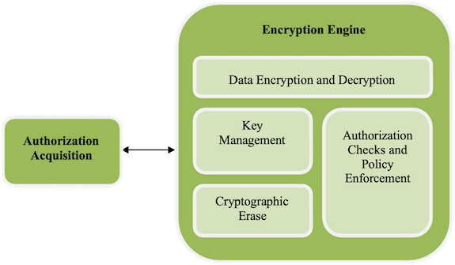
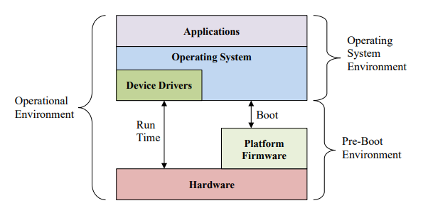

The purpose of the set of Collaborative Protection Profiles (cPPs) for Full Drive
Encryption (FDE): Authorization Acquisition (AA) and Encryption Engine (EE) is to provide
requirements for Data-at-Rest protection against unauthorized access or disclosure of stored data on a lost device.
These cPPs allow FDE solutions based in software and/or hardware to meet the requirements for Data-at-Rest protection.
The form factor for a storage device may vary, but could include: hard disk drives/solid state
drives in servers, workstations, laptops, mobile devices, tablets, and external media. A
hardware solution could be a Self-Encrypting Drive or other hardware-based solutions; the
interface (USB, SATA, etc.) used to connect the storage device to the host machine is outside
the scope of this cPP.
Full Drive Encryption encrypts all data (with certain exceptions) on the storage device and
permits access to the data only after successful authorization to the FDE solution. The
exceptions include the necessity to leave a portion of the storage device (the size may vary
based on implementation) unencrypted for such things as the Master Boot Record (MBR) or other
AA/EE pre-authentication software. These FDEcPPs interpret the term “full drive encryption”
to allow FDE solutions to leave a portion of the storage device unencrypted so long as it
does not contain plaintext user or plaintext authorization data.
Since the FDEcPPs support a variety of solutions, two cPPs describe the requirements for the
FDE components shown in Figure 1.
The FDEcPP - Authorization Acquisition describes the requirements for the Authorization Acquisition
piece and details the necessary security requirements and assurance activities necessary to interact with a user
and result in the availability of a Border Encryption Value (BEV).
The FDEcPP - Encryption Engine describes the requirements for the Encryption Engine piece and details
the necessary security requirements and assurance activities for the actual encryption and
decryption of the data by the DEK. Each cPP will also have a set of core requirements for management
functions, proper handling of cryptographic keys, updates performed in a trusted manner, audit and self-tests.
The Target of Evaluation (TOE) description defines the scope and functionality of the Encryption Engine, and
the Security Problem Definition describes the assumptions made about the operating
environment and the threats to the EE that the cPP requirements address.
1.2 Terms
The following sections list Common Criteria and technology terms used in this document.
1.2.1 Common Criteria Terms
Assurance
Grounds for confidence that a TOE meets the SFRs [CC].
Base Protection Profile (Base-PP)
Protection Profile used as a basis to build a PP-Configuration.
Collaborative Protection Profile (cPP)
A Protection Profile developed by
international technical communities and approved by multiple schemes.
Common Criteria (CC)
Common Criteria for Information Technology Security Evaluation (International Standard ISO/IEC 15408).
Common Criteria Testing Laboratory
Within the context of the Common Criteria Evaluation and Validation Scheme (CCEVS), an IT security evaluation facility
accredited by the National Voluntary Laboratory Accreditation Program (NVLAP) and approved by the NIAP Validation Body to conduct Common Criteria-based evaluations.
Common Evaluation Methodology (CEM)
Common Evaluation Methodology for Information Technology Security Evaluation.
Direct Rationale
A type of Protection Profile, PP-Module, or Security Target in which the security
problem definition (SPD) elements are mapped directly to the SFRs and possibly to the
security objectives for the operational environment. There are no security objectives
for the TOE.
Extended Package (EP)
A deprecated document form for collecting SFRs that implement a particular protocol, technology,
or functionality. See Functional Packages.
Functional Package (FP)
A document that collects SFRs for a particular protocol, technology,
or functionality.
Operational Environment (OE)
Hardware and software that are outside the TOE boundary that support the TOE functionality and security policy.
Protection Profile (PP)
An implementation-independent set of security requirements for a category of products.
A comprehensive set of security requirements for a product type that consists of at least one Base-PP and at least one PP-Module.
Protection Profile Module (PP-Module)
An implementation-independent statement of security needs for a TOE type complementary to one or more Base-PPs.
Security Assurance Requirement (SAR)
A requirement to assure the security of the TOE.
Security Functional Requirement (SFR)
A requirement for security enforcement by the TOE.
Security Target (ST)
A set of implementation-dependent security requirements for a specific product.
Target of Evaluation (TOE)
The product under evaluation.
TOE Security Functionality (TSF)
The security functionality of the product under evaluation.
TOE Summary Specification (TSS)
A description of how a TOE satisfies the SFRs in an ST.
1.2.2 Technical Terms
Authorization Factor
A value that a user knows, has, or is (e.g. password, token, etc.)
submitted to the TOE to establish that the user is in the community
authorized to use the drive. This value is used in the derivation or
decryption of the BEV and eventual decryption of the DEK. Note
that these values may or may not be used to establish the particular
identity of the user.
Authorized User
A user who has a valid Authorization Factor or
legitimate physical possession of the drive.
Border Encryption Value (BEV)
A value passed from the FDE Authorization
Acquisition (AA) to the FDE Encryption Engine (EE) intended to link the key chains
of the two components.
Data Encryption Key (DEK)
A key used to encrypt data-at-rest.
Full Drive Encryption (FDE)
Refers to partitions of logical blocks of user accessible data as
managed by the host system. FDE products encrypt all data (with certain
exceptions) on the partition of the storage device and permits access to
the data only after successful authorization.
FDE solutions may leave a portion of the storage
device unencrypted, for such
things as the Master Boot Record (MBR) or other AA/EE pre-authentication software,
so long as it contains no protected data.
Host Platform
The local hardware and software the TOE is running on, and does not
include any peripheral devices (e.g. USB devices) that may be
connected to the local hardware and software.
Intermediate Key
A key used in a point between the initial user authorization and the
DEK.
Key Chaining
The method of using multiple layers of encryption keys to protect data.
A top layer key encrypts a lower layer key which encrypts the data;
this method can have any number of layers.
Key Encryption Key (KEK)
A key used to encrypt other keys, such as DEKs or storage that
contains keys.
Key Material
Key material is commonly known as critical security parameter (CSP)
data, and also includes authorization data, nonces, and metadata.
Key Release Key (KRK)
A key used to release another key from storage, it is not used for the
direct derivation or decryption of another key.
Key Sanitization
A method of sanitizing encrypted data by securely overwriting the key
that was encrypting the data.
Non-Volatile Memory
A type of computer memory that will retain information without
power.
Operating System (OS)
Software which runs at the highest privilege level and can directly
control hardware resources.
Powered-Off State
The device has been shut down.
Protected Data
This refers to all encrypted data on the storage device.
Protected data may exclude a
Master Boot Record or Pre-authentication area of the drive – areas
that are sometimes necessarily unencrypted.
Root of Trust for Update (RTU)
A type of RoT that verifies the integrity and authenticity of an
update payload before initiating the update process.
Submask
A submask is a bit string that can be generated and stored in a number
of ways.
1.3 Implementation
Full Drive Encryption solutions vary with implementation and vendor combinations.
Vendors must evaluate products that provide both components of the Full Disk
Encryption Solution (AA and EE) against both cPPs, although that could be done in a single evaluation
with one ST. A vendor that provides a single component of an FDE solution would only evaluate
against the applicable cPP. The FDEcPP is divided into two documents to allow labs to
independently evaluate solutions tailored to one cPP or the other. When a customer acquires
an FDE solution, they will either obtain a single vendor product that meets the AA + EEcPPs
or two products, one of which meets the AA and the other of which meets the EEcPPs.
The table below illustrates a few examples for certification
A single vendor’s combination of hardware (e.g., hardware encryption engine,
cryptographic co-processor) and software / firmware
1.4 TOE Overview
The Target of Evaluation (TOE) for this cPP is either the Encryption Engine or a combined
evaluation of the set of cPPs for FDE (Authorization Acquisition or Encryption Engine).
The following sections provide an overview of the functionality of the FDEEE as well as the security capabilities.
1.4.1 Encryption Engine Introduction
The Encryption Engine (EE) objectives focus on data encryption, policy enforcement, and key
management. The EE is responsible for the generation, update, archival, recovery, protection,
and destruction of the DEK and other intermediate keys under its control. The EE receives a
Border Encryption Value (BEV) from the AA. The EE uses that BEV for the decryption of the DEK although other
intermediate keys may exist in between those two points. Key Encryption Keys (KEKs) wrap
other keys, notably the DEK or other intermediary keys which chain to the DEK. Key Releasing
Keys (KRKs) authorize the EE to release either the DEK or other intermediary keys which chain
to the DEK. These keys only differ in the functional use.
The EE determines whether to allow or deny a requested action based on the KEK or KRK
provided by the AA. Possible requested actions include but are not limited to changing of
encryption keys, decryption of data, and key sanitization of encryption keys (including the
DEK). The EE may offer additional policy enforcement to prevent access to ciphertext or the
unencrypted portion of the storage device. Additionally the EE may provide encryption support
for multiple users on an individual basis.
Figure 2 illustrates the components within EE and its relationship with AA.
 Figure 2:
Encryption Engine Details
1.4.2 Encryption Engine Security Capabilities
The Encryption Engine is ultimately responsible for ensuring that the data is encrypted using a
prescribed set of algorithms. The EE manages the decryption of the data on the storage device
through decryption of the DEK based on the validity of the BEV provided by the AA. It also
manages administrative functions, such as changing the DEK, managing the BEVs required for
decrypting or releasing the DEK, managing the intermediate wrapping keys under its control,
and performing a key sanitization.
The EE may provide key archiving and recovery functionality. The EE may manage the
archiving and recovery itself, or interface with the AA to perform this function. It may also
offer configurable features, which restricts the movement of keying material and disables
recovery functionality.
The foremost security objective of encrypting storage devices is to force an adversary to
perform an exhaustive search against a prohibitively large key space in order to recover the
DEK or other intermediate keys. The EE uses approved cryptography to generate, handle, and
protect keys to force an adversary who obtains an unpowered lost or stolen platform without
the authorization factors or intermediate keys to exhaust the encryption key space of
intermediate keys or DEK to obtain the data. The EE randomly generates DEKs and – in some
cases - intermediate keys. The EE uses DEKs in a symmetric encryption algorithm in an
appropriate mode along with appropriate initialization vectors for that mode to encrypt storage
units (e.g. sectors or blocks) on the storage device. The EE either encrypts the DEK with a
KEK or an intermediate key.
This version of the cPP includes additional security features, included advanced power saving
requirements and firmware signing requirements.
1.4.3 Interface/Boundary
The interface and boundary between the AA and the EE will vary based on the implementation.
If one vendor provides the entire FDE solution, then it may choose to not implement an interface between the AA and EE components.
If a vendor provides a solution for one of the components, then the assumptions below state that the channel between the two components
is sufficiently secure. Although standards and specifications exist for the interface between AA and EE components, the cPP does
not require vendors to follow the standards in this version.
1.5 Compliant Targets of Evaluation
1.5.1 TOE Boundary
The environment in which the EE functions may differ depending on the boot stage of the
platform in which it operates; see Figure 3. Aspects of initialization, and perhaps authorization
may be performed in the Pre-Boot environment, while provisioning, encryption, decryption
and management functionality are likely performed in the Operating System environment.
Some of these aspects may occur in both environments.
The Operating System environment may make a full range of services available to the
Encryption Engine, including hardware drivers, cryptographic libraries, and perhaps other
services external to the TOE.
The Pre-Boot environment is much more constrained with limited capabilities. This
environment turns on the minimum number of peripherals and loads only those drivers
necessary to bring the platform from a cold start to executing a fully functional operating
system with running applications.
The EETOE may include or leverage features and functions within the operational
environment.
 Figure 3:
Operational Environment
1.6 Use Cases
The use case for a product conforming to the FDEcPPs is to protect data-at-rest on a device that is
lost or stolen while powered off without any prior access by an adversary. The use case where an
adversary obtains a device that is in a powered state and is able to make modifications to the
environment or the TOE itself (e.g., evil maid attacks) is not addressed by these cPPs (i.e., FDE-AA and FDE- EE).
The evaluation methods used for evaluating the TOE are a combination of the workunits
defined in [CEM] as well as the Evaluation Activities for ensuring that individual SFRs
and SARs have a sufficient level of supporting evidence in the Security Target and guidance
documentation and have been sufficiently tested by the laboratory as part of completing
ATE_IND.1. Any functional packages this PP claims similarly contain their own Evaluation
Activities that are used in this same manner.
CC Conformance Claims
This PP is conformant to
Part 2 (extended)
and Part 3 (conformant)
of Common Criteria CC:2022, Revision 1.
PP Claim
This PP does not claim conformance to
any Protection Profile.
The following PPs and PP-Modules are allowed to be specified in a
PP-Configuration with this PP:
Package Claim
This PP is not conformant to any
Functional or Assurance Packages.
3 Security Problem Definition
3.1 Threats
This section provides a narrative that describes how the requirements mitigate the mapped
threats. A requirement may mitigate aspects of multiple threats. A requirement may only
mitigate a threat in a limited way. Some requirements are optional, either because the TSF
fully mitigates the threat without the additional requirements being claimed or because the
TSF relies on its Operational Environment to provide the functionality that is described by
the optional requirements.
A threat consists of a threat agent, an asset and an adverse action of that threat agent on
that asset. The threat agents are the entities that put the assets at risk if an adversary
obtains a lost or stolen storage device. Threats drive the functional requirements for the
Target of Evaluation (TOE). For instance, one threat below is T.UNAUTHORIZED_DATA_ACCESS.
The threat agent is the possessor (unauthorized user) of a lost or stolen storage device.
The asset is the data on the storage device, while the adverse action is to attempt to
obtain those data from the storage device. This threat drives the functional requirements
for the storage device encryption (TOE) to authorize who can use the TOE to access the hard
disk and encrypt/decrypt the data. Since possession of the KEK, DEK, intermediate keys,
authorization factors, submasks, and random numbers or any other values that contribute
to the creation of keys or authorization factors could allow an unauthorized user to
defeat the encryption, this SPD considers key material equivalent to the data in importance
and they appear among the other assets addressed below.
It is important to reemphasize at this point that this collaborative Protection Profile
does not expect the product (TOE) to defend against the possessor of the lost or stolen
storage device who can introduce malicious code or exploitable hardware components into the
Target of Evaluation (TOE) or the Operational Environment. It assumes that the user
physically protects the TOE and that the Operational Environment provides sufficient
protection against logical attacks. One specific area where a conformant TOE offers
some protection is in providing updates to the TOE; other than this area, though,
this cPP mandates no other countermeasures. Similarly, these requirements do not
address the “lost and found” hard disk problem, where an adversary may have taken
the hard disk, compromised the unencrypted portions of the boot device (e.g., MBR,
boot partition), and then made it available to be recovered by the original user so
that they would execute the compromised code.
T.AUTHORIZATION_GUESSING
Threat agents may exercise host software to repeatedly guess authorization factors, such as passwords and PINs.
Successful guessing of the authorization factors may cause the TOE to release DEKs or otherwise put it in a state
in which it discloses protected data to unauthorized users.
T.CHOSEN_PLAINTEXT
Threat agents may trick authorized users into storing chosen
plaintext on the encrypted storage device in the form of an image, document, or some other
file. A poor choice of encryption algorithms, encryption modes, and initialization vectors along
with the chosen plaintext could allow attackers to recover the effective DEK, thus providing
unauthorized access to the previously unknown plaintext on the storage device.
T.KEYING_MATERIAL_COMPROMISE
Possession of any of the keys, authorization factors, submasks, and random
numbers or any other values that contribute to the creation of keys or authorization factors
could allow an unauthorized user to defeat the encryption. The cPP considers possession of
key material of equal importance to the data itself. Threat agents may look for keying material
in unencrypted sectors of the storage device and on other peripherals in the operating environment
(OE), (e.g., BIOS configuration, SPI flash, or TPMs).
T.KEYSPACE_EXHAUST
Threat agents may perform a cryptographic exhaustive search against the key space. Poorly chosen
encryption algorithms and parameters allow attackers to exhaust the key space through brute force
and give them unauthorized access to the data.
T.KNOWN_PLAINTEXT
Threat agents know plaintext in regions of storage devices,
especially in uninitialized regions (all zeroes) as well as regions that contain well known
software such as operating systems. A poor choice of encryption algorithms, encryption modes,
and initialization vectors along with known plaintext could allow an attacker to recover the
effective DEK, thus providing unauthorized access to the previously unknown plaintext on the
storage device.
T.UNAUTHORIZED_DATA_ACCESS
The cPP addresses the primary threat of unauthorized disclosure of protected data stored on a
storage device. If an adversary obtains a lost or stolen storage device (e.g., a storage device
contained in a laptop or a portable external storage device), they may attempt to connect a
targeted storage device to a host of which they have complete control and have raw access to
the storage device (e.g., to specified disk sectors, to specified blocks).
T.UNAUTHORIZED_FIRMWARE_MODIFY
An attacker attempts to modify the firmware of the storage device via a command from the AA or from the
host platform that may compromise the security features of the TOE.
T.UNAUTHORIZED_FIRMWARE_UPDATE
An attacker attempts to replace the firmware
on the storage device via a command from the AA or from the host platform with a malicious firmware
update that may compromise the security features of the TOE.
T.UNAUTHORIZED_UPDATE
Threat agents may attempt to perform an update of the product which compromises the security
features of the TOE. Poorly chosen update protocols, signature generation and verification
algorithms, and parameters may allow attackers to install software that bypasses the intended
security features and provides them unauthorized access to data.
3.2 Assumptions
A.INITIAL_DRIVE_STATE
Users enable Full Drive Encryption on a newly provisioned storage device free of protected data in
areas not targeted for encryption. It is also assumed that data intended for protection should not
be on the targeted storage media until after provisioning. The cPP does not intend to include
requirements to find all the areas on storage devices that potentially contain protected data.
In some cases, it may not be possible - for example, data contained in “bad” sectors. While
inadvertent exposure to data contained in bad sectors or un-partitioned space is unlikely,
one may use forensics tools to recover data from such areas of the storage device. Consequently,
the cPP assumes bad sectors, un-partitioned space, and areas that must contain unencrypted code
(e.g., MBR and AA/EE pre-authentication software) contain no protected data.
A.PHYSICAL
The platform is assumed to be physically protected in its Operational Environment and not subject
to physical attacks that compromise the security or interfere with the platform’s correct operation.
A.PLATFORM_STATE
The platform in which the storage device resides (or an external storage device is connected)
is free of malware that could interfere with the correct operation of the product.
A.POWER_DOWN
The user does not leave the platform and/or storage device unattended until all volatile memory is erased after a power-off, so memory remnant attacks are infeasible.
Authorized users do not leave the platform and/or storage device in a mode where sensitive information persists in non-volatile storage (e.g., lock screen). Users power the platform and/or storage device down or place it into a power managed state, such as a “hibernation mode”.
A.STRONG_CRYPTO
All cryptography implemented in the Operational Environment and used by the TOE
meets the requirements listed in the cPP. This includes generation of external token authorization
factors by an RBG.
A.TRAINED_USER
Users follow the provided guidance for securing the TOE and
authorization factors. This includes conformance with authorization factor strength, using
external token authentication factors for no other purpose and ensuring external token
authorization factors are securely stored separately from the storage device or platform.
The user should also be trained on how to power off their system.
A.TRUSTED_CHANNEL
Communication among and between product components (e.g., AA and EE) is
sufficiently protected to prevent information disclosure. In cases in which a single
product fulfils both cPPs, the communication between the components does not
extend beyond the boundary of the TOE (i.e., communication path is within the TOE
boundary) so this assumption is inherently met. In cases in which independent products satisfy the requirements of the
AA and EE, the physically close proximity of the two products during their operation
means that the threat agent has very little opportunity to interpose itself in the
channel between the two without the user noticing and taking appropriate actions.
3.3 Organizational Security Policies
This document does not define any additional OSPs.
4 Security Objectives
4.1 Security Objectives for the Operational Environment
The Operational Environment (OE) of the TOE implements technical and procedural measures to assist
the TOE in correctly providing its security functionality. This part wise solution forms the
security objectives for the Operational Environment and consists of a set of statements describing
the goals that the Operational Environment should achieve.
OE.INITIAL_DRIVE_STATE
The OE provides a newly provisioned or initialized storage device free of protected data in
areas not targeted for encryption.
Rationale: Since the cPP requires all protected data to be encrypted, A.INITIAL_DRIVE_STATE assumes
that the initial state of the device targeted FDE is free of protected data in those areas of
the drive where encryption will not be invoked (e.g., MBR, AA, or EE pre-authentication software).
Given this known start state, the product (once installed and operational) ensures partitions of
logical blocks of user accessible data is protected.
OE.PASSWORD_STRENGTH
An authorized user will be responsible for ensuring that the password authorization factor
conforms to guidance from the organization that uses or owns the TOE.
Rationale: Users are properly trained [A.TRAINED_USER] to create authorization factors that conform to
administrative guidance.
OE.PHYSICAL
The Operational Environment will provide a secure physical computing space such than an adversary
is not able to make modifications to the environment or to the TOE itself.
Rationale: As stated in section 1.6, the use case for this cPP is to protect data-at-rest on a
device where the adversary receives it in a powered off state and has no prior access.
OE.PLATFORM_STATE
The platform in which the storage device resides (or an external storage device is connected) is
free of malware that could interfere with the correct operation of the product.
Rationale: A platform free of malware [A.PLATFORM_STATE] prevents an attack vector that could
potentially interfere with the correct operation of the product.
OE.POWER_DOWN
Volatile memory is erased after entering a compliant power-saving state or turned off so
memory remnant attacks are infeasible.
Rationale: Users are properly trained [A.TRAINED_USER] to not leave the storage device unattended
until it is in a compliant power-saving state or fully turned off.
OE.SINGLE_USE_ET
External tokens that contain authorization factors will be used for no other purpose than
to store the external token authorization factor.
Rationale: Users are properly trained [A.TRAINED_USER] to use external token authorization factors as
intended and for no other purpose.
OE.STRONG_ENVIRONMENT_CRYPTO
The Operating Environment will provide a cryptographic function capability that is commensurate with the
requirements and capabilities of the TOE and Appendix A.
Rationale: All cryptography implemented in the Operational Environment and used by the product meets the
requirements listed in this cPP [A.STRONG_CRYPTO].
OE.TRAINED_USERS
Authorized users will be properly trained and follow all guidance for securing the TOE and authorization factors.
Rationale: Users are properly trained [A.TRAINED_USER] to create authorization factors that conform to guidance,
not store external token authorization factors with the device, and power down the TOE when required (OE.PLATFORM_STATE).
OE.TRUSTED_CHANNEL
Communication among and between product components (i.e., AA and EE) is sufficiently protected to prevent information disclosure.
Rationale: In situations where there is an opportunity for an adversary to interpose
themselves in the channel between the AA and the EE, a trusted channel should be
established to prevent exploitation. [A.TRUSTED_CHANNEL] assumes the existence
of a trusted channel between the AA and EE, except for when the boundary is within
and does not breach the TOE or is in such close proximity that a breach is not possible
without detection.
4.2 Security Objectives Rationale
This section describes how the assumptions and organizational
security policies map to operational environment security objectives.
This chapter describes the security requirements which have to be fulfilled by the product under evaluation.
Those requirements comprise functional components from Part 2 and assurance components from Part 3 of
[CC].
The following conventions are used for the completion of operations:
Refinement operation (denoted by bold text or strikethrough
text): Is used to add details to a requirement or to remove part of the requirement that is made irrelevant
through the completion of another operation, and thus further restricts a requirement.
Selection (denoted by italicized text): Is used to select one or more options
provided by the [CC] in stating a requirement.
Assignment operation (denoted by italicized text): Is used to assign a
specific value to an unspecified parameter, such as the length of a password. Showing the
value in square brackets indicates assignment.
Iteration operation: Is indicated by appending the SFR name with a slash and unique identifier
suggesting the purpose of the operation, e.g. "/EXAMPLE1."
5.1 Security Functional Requirements
The individual security functional requirements are specified in the sections below.
The TSF shall generate cryptographic keys in accordance with a specified
cryptographic key generation algorithmmethod [selection: generate a DEK using the RBG as specified in FCS_RBG.1, accept a DEK that is generated by the RBG provided by the host platform, accept a DEK that is wrapped as specified in FCS_COP.1/KeyWrap]
and specified cryptographic key sizes [256 bits] that meet the following: [assignment:
list of
standards].
Application
Note:
This SFR is iterated because additional iterations are defined as optional requirements in Appendix A.
This iteration was chosen specifically to ensure consistency between the FDEcPPs.
The purpose of this requirement is to explain DEK generation during provisioning.
If the TOE can be configured to obtain a DEK through more than one method, the ST author
chooses the applicable options within the selection. For example, the TOE may generate
random numbers with an approved RBG to create a DEK, as well as provide an interface to
accept a DEK from the environment.
If the ST author chooses the first or third option, or both in the selection, the corresponding
requirement is pulled from Appendix A and included in the body of the ST.
The evaluator shall examine the TSS to determine that it describes how the TOE obtains a DEK (either generating the DEK or receiving from the environment).
If the TOE generates a DEK, the evaluator shall review the TSS to determine that it describes how the functionality described by FCS_RBG_EXT.1 is invoked. If the DEK
is generated outside of the TOE, the evaluator checks to ensure that for each platform identified in the TOE the TSS, it describes the interface used by the TOE to invoke this
functionality. The evaluator uses the description of the interface between the RBG and the TOE to determine that it requests a key greater than or equal to the required key
sizes.
If the TOE received the DEK from outside the host platform, then the evaluator shall examine the TSS to determine that the DEK is sent wrapped using the appropriate encryption algorithm.
The TSF shall destroy [all key material, BEV, and authentication factors
stored in plaintext] when [transitioning to a compliant power saving
state as defined by FPT_PWR_EXT.1].
Application
Note:
The TOE may end up in a non-compliant power saving
state indistinguishable from a compliant power state (e.g. as result of sudden or
unexpected power loss). Guidance documentation must state what conditions result in clear text keys
or key materials to stay in volatile memory and identify mitigation measures that result in
erasure of volatile memory.
The TSF shall destroy cryptographic keys and keying material specified by FCS_CKM.6.1/Power in
accordance with a specified cryptographic key destruction method [selection: instruct the operational environment to erase, erase] that meets the following: [a key
destruction method specified in FCS_CKM_EXT.6].
Application
Note:
In some cases, erasure of keys from volatile memory is
only supported by the operational environment, in which case the operational
environment must expose a well-documented mechanism or interface to invoke the memory erase operation.
Self-encrypting drives do not store keys in the Operational Environment and cannot instruct
the Operational Environment to perform functionality so they are not expected to select
“instruct the Operational Environment to clear”.
The evaluator shall verify the TSS provides a description of what keys and key material
are destroyed when entering any compliant power saving state.
Guidance
The evaluator shall validate that guidance documentation contains clear warnings and
information on conditions in which the TOE may end up in a non-compliant power
saving state indistinguishable from a compliant power saving state. In that case it must
contain mitigation instructions on what to do in such scenarios.
The evaluator shall verify the KMD includes a description of the areas where keys and
key material reside.
The evaluator shall verify the KMD includes a key lifecycle that includes a description
where key material resides, how the key material is used, and how the material is
destroyed once it is not needed and that the documentation in the KMD follows
FCS_CKM_EXT.6 for the destruction.
Tests
There are no test evaluation activities for this SFR.
The evaluator shall verify the TSS provides a high level description of how keys stored in volatile memory are destroyed. The valuator to verify that TSS outlines:
if and when the TSF or the Operational Environment is used to destroy keys from volatile memory;
if and how memory locations for (temporary) keys are tracked;
details of the interface used for key erasure when relying on the OE for memory erasure.
Guidance
The evaluator shall check the guidance documentation if the TOE depends on the
Operational Environment for memory erasure and how that is achieved.
(Key Management Description may be used if necessary details describe proprietary information)
The evaluator shall examine the TOE’s keychain in the TSS/KMD and verify all keys subject to destruction
are destroyed according to one of the specified methods.
The TSF shall perform [cryptographic hashing] in accordance with a specified
cryptographic algorithm
[selection: SHA-256, SHA-384, SHA-512, SHA3-384, SHA3-512] that meet the following:
[selection: ISO/IEC 10118-3:2018 [SHA, SHA3], FIPS PUB 180-4 [SHA], FIPS PUB 202 [SHA3]].
Application
Note:
In accordance with CNSA 1.0 and 2.0:
SHA3 hashes may be used only for internal hardware functionality such as
boot integrity checks, and
SHA-256 is permitted only for use as a PRF or MAC as part of a key derivation function,
or as part of LMS or XMSS.
The hash selection should be consistent with the overall strength of the
algorithm used for signature generation. For example, the TOE should choose SHA-384 for 3072-bit RSA,
4096-bit RSA, or ECC with P-384; and SHA-512 for ECC with P-521.
The evaluator shall examine the TSS to verify that if SHA-256 is selected, that it is being
used only as a PRF or MAC step in a key derivation function or as part of LMS, and not as a hash algorithm.
Guidance
There are no AGD evaluation activities for this SFR.
There are no KMD evaluation activities for this SFR.
Tests
The following tests may require the developer to provide access to a test platform that
provides the evaluator with tools that are typically not found on factory products.
The following tests are conditional based upon the selections made in the SFR. The
evaluator shall perform the following test or witness respective tests executed by
the developer. The tests must be executed on a platform that is as close as practically
possible to the operational platform (but which may be instrumented in terms of,
for example, use of a debug mode). Where the test is not carried out on the TOE
itself, the test platform shall be identified and the differences between test
environment and TOE execution environment shall be described.
SHA-256, SHA-384, SHA-512
To test the TOE’s ability to generate hash digests using SHA2 the evaluator shall
perform the Algorithm Functional Test, Monte Carlo Test, and Large Data Test for each claimed
SHA2 algorithm.
Algorithm Functional Test
The evaluator shall generate a number of test cases equal to the block size of the hash (512 for
SHA2-256; 1024 for the other SHA2 algorithms).
Each test case is to consist of random data of a random length between 0 and 65536 bits, or the
largest size supported.
Each test case is to consist of random data of a random length between 0 and 65536 bits, or the
largest size supported.
Monte Carlo Test
Monte Carlo tests begin with a single seed and run 100 iterations of the chained computation.
There are two versions of the Monte Carlo test for SHA-1 and SHA-2. Either one is acceptable.
For the Standard Monte Carlo test the message hashed is always three times the length of the
initial seed.
For j = 0 to 99
A = B = C = SEED
For i = 0 to 999
MSG = A || B || C
MD = SHA(MSG)
A = B
B = C
C = MD
Output MD
SEED = MD
For the alternate version of the Monte Carlo Test, the hashed message is always the same length as
the seed.
INITIAL_SEED_LENGTH = LEN(SEED)
For j = 0 to 99
A = B = C = SEED
For i = 0 to 999
MSG = A || B || C
if LEN(MSG) >= INITIAL_SEED_LENGTH:
MSG = leftmost INITIAL_SEED_LENGTH bits of MSG
else:
MSG = MSG || INITIAL_SEED_LENGTH - LEN(MSG) 0 bits
MD = SHA(MSG)
A = B
B = C
C = MD
Output MD
SEED = MD
The evaluator shall compare the output against results generated by a known-good
implementation with the same input.
Large Data Test
The implementation must be tested against one test case each on large data messages of 1GB,
2GB, 4GB, and 8GB of data as supported. The data need not be random. It may, for example,
consist of a repeated pattern of 64 bits.
The evaluator shall compare the output against results generated by a known-good
implementation with the same input.
SHA3-384, SHA3-512
To test the TOE’s ability to generate hash digests using SHA3 the evaluator shall perform the
Algorithm Functional Test, Monte Carlo Test, and Large Data Tests for each claimed SHA3
algorithm.
Algorithm Functional Test
Generate a test case consisting of random data for every message length from 0 bits (or the
smallest supported message size) to rate bits, where rate equals
832 for SHA3-384 and
576 for SHA3-512.
Additionally, generate tests cases of random data for messages of every multiple of (rate+1) bits
starting at length rate, and continuing until 65535 is exceeded.
The evaluator shall compare the output against results generated by a known-good
implementation with the same input.
Monte Carlo Test
Monte Carlo tests begin with a single seed and run 100 iterations of the chained computation.
For this Monte Carlo Test, the hashed message is always the same length as the seed.
MD[0] = SEED
INITIAL_SEED_LENGTH = LEN(SEED)
For 100 iterations
For i = 1 to 1000
MSG = MD[i-1];
if LEN(MSG) >= INITIAL_SEED_LENGTH:
MSG = leftmost INITIAL_SEED_LENGTH bits of MSG
else:
MSG = MSG || INITIAL_SEED_LENGTH - LEN(MSG) 0 bits
MD[i] = SHA3(MSG)
MD[0] = MD[1000]
Output MD[0]
The evaluator shall compare the output against results generated by a known-good
implementation with the same input.
Large Data Test
The implementation must be tested against one test case each on large data messages of 1GB,
2GB, 4GB, and 8GB of data as supported. The data need not be random. It may, for example,
consist of a repeated pattern of 64 bits.
The evaluator shall compare the output against results generated by a known-good
implementation with the same input.
The TSF shall perform [cryptographic signature services (verification)]
in accordance with a specified cryptographic algorithm
[selection:
CNSA 2.0 Compliant Algorithms:
[selection:
Leighton-Micali Signature Algorithm for verification using cryptographic key sizes of
[selection: 192, 256] bits
eXtended Merkle Signature Scheme Algorithm for verification using cryptographic key sizes of
[selection: 192, 256] bits
Module-Lattice-Based Digital Signature Standard using the parameter
set ML-DSA-87
]
CNSA 1.0 Compliant Algorithms:
[selection:
RSA schemes using cryptographic key sizes of
[selection: 3072-bits, 4096-bits]
ECDSA schemes using [“NIST curves”
[selection: P-384, P-521]
]
]
]
that meet the following:
[selection: NIST SP 800-208 [LMS, XMSS], FIPS PUB 204 [ML-DSA], FIPS PUB 186-5 Section 5 [RSA], FIPS PUB 186-5 Section 6 [ECDSA]].
Application
Note:
The selection should be consistent with the overall strength of the algorithm used for FCS_COP.1/SigVer and quantum resistant recommendations. For example,
SHA-256 should be chosen for 2048-bit RSA or ECC with P-256, SHA-384 should be chosen for 3072-bit RSA, 4096-bit RSA, or ECC with P-384, and SHA-512 should
be chosen for ECC with P-521. The selection of the standard is made based on the algorithms selected.
This SFR is mandatory for its use in verification of digital signatures for TOE updates. As support is expanded for CNSA 2.0, CNSA 1.0 will be removed as an selection in a future update.
This requirement is used to verify digital signatures attached to updates from the TOE
manufacturer before installing those updates on the TOE. Because this component is to
be used in the update function, additional Evaluation Activities to those listed below
are covered in other evaluation activities sections in this document. The following
activities deal only with the implementation for the digital signature algorithm; the
evaluator performs the testing appropriate for the algorithms selected in the
component.
Hash functions and/or random number generation required by these algorithms must
be specified in the ST; therefore the Evaluation Activities associated with those
functions are contained in the associated Cryptographic Hashing and Random Bit
Generation sections. Additionally, the only function required by the TOE is the
verification of digital signatures. If the TOE generates digital signatures to support the
implementation of any functionality required by this cPP, then the applicable
evaluation and validation scheme must be consulted to determine the required
evaluation activities.
The evaluator shall check the TSS to ensure that it describes the overall flow of the
signature verification. This should at least include identification of the format and
general location (e.g., "firmware on the hard drive device" rather than “memory
location 0x00007A4B") of the data to be used in verifying the digital signature; how
the data received from the operational environment are brought on to the device; and
any processing that is performed that is not part of the digital signature algorithm (for
instance, checking of certificate revocation lists).
Guidance
There are no AGD evaluation activities for this SFR.
There are no KMD evaluation activities for this SFR.
Tests
Each section below contains the tests the evaluators must perform for each type of
digital signature scheme. Based on the assignments and selections in the requirement,
the evaluators choose the specific activities that correspond to those selections.
It should be noted that for the schemes given below, there are no key generation/domain
parameter generation testing requirements. This is because it is not anticipated that this
functionality would be needed in the end device, since the functionality is limited to
checking digital signatures in delivered updates. This means that the domain
parameters should have already been generated and encapsulated in the hard drive
firmware or on-board non-volatile storage. If key generation/domain parameter
generation is required, the evaluation and validation scheme must be consulted to
ensure the correct specification of the required evaluation activities and any additional
components.
The following tests are conditional based upon the selections made within the SFR.
The following tests may require the developer to provide access to a test platform that
provides the evaluator with tools that are typically not found on factory products.
Test FCS_COP.1/SigVer:1:
ECDSAFIPS 186-5 Signature Verification Test. For each supported NIST curve (i.e., P-384 and P-521) and SHA function pair, the evaluator shall generate a set of 10 1024-bit message, public key and signature tuples and modify one of the values (message, public key or signature) in five of the 10 tuples. The evaluator shall obtain in response a set of 10 PASS/FAIL values.
Test FCS_COP.1/SigVer:2:
Signature Verification Test. The evaluator shall perform the Signature Verification test to verify the ability of the TOE to recognize another party’s valid and invalid signatures. The evaluator shall inject errors into the test vectors produced during the Signature Verification Test by introducing errors in some of the public keys, e, messages, IR format, and/or signatures. The TOE attempts to verify the signatures and returns success or failure.
LMS/XMSS Signature Algorithm Test
Test FCS_COP.1/SigVer:3:
For each supported LMS/LMSOTS pair, the evaluator generates a private/public key pair. With the private key, the evaluator generates 4 messages of length 1024 bits. The messages and public key are provided to the TOE. The signature for each message is generated with the following error types "none", “modify message”, “modify signature”, “modify header”. For "none" the message is unmodified and the signature is correct. For "modify message" the signature is for a modified message where a single bit is flipped. For "modify signature", one bit of the signature is flipped. For "modify header" the signature uses a different LMS/LMSOTS pair. Each error type is represented. For each message, signature pair the TOE returns "true" or "false" depending on whether the signature verifies or not.
ML-DSA Test
Test FCS_COP.1/SigVer:4:
The evaluator shall 10x input to the internal SigVer function, a public key, message and signature. Verify the signature. Tests should involve a mix of good and bad signatures generated using different messages, keys, etc. Here internal SigVer refers to the TOE’s implementation of the function ML-DSA.Verify_internal(-,-,-) as described in FIPS.204.
FCS_COP.1/SKC Cryptographic Operation (AES Data Encryption/Decryption)
The TSF shall perform [symmetric-key encryption/decryption] in accordance with a
specified cryptographic algorithm
[selection:
Cryptographic algorithm]
and cryptographic key sizes
[selection:
Cryptographic key sizes]
that meet the following:
[selection:
List of standards]
The following table provides the allowed choices for
completion of the selection operations of FCS_COP.1/SKC.
AES in GCM mode with non-repeating IVs using [selection: deterministic, RBG-based],
IV construction; the tag must be of length
[selection: 96, 104, 112, 120, 128] bits.
Application
Note:
The intent of this requirement in the context of this cPP is to provide an SFR that expresses the appropriate symmetric encryption/decryption algorithms
suitable for use in the TOE. If the ST author incorporates the validation requirement (FCS_VAL_EXT.1) and chooses to select the option to decrypt a known
value and perform a comparison, this is the requirement used to specify the algorithm, modes, and key sizes the ST author can choose from.
This SFR is required when the TSF performs any key wrapping, key encryption, or key derivation operation as part of maintaining and deriving a key chain
(FCS_CKM.5.1, FCS_KYC_EXT.2), or when the TSF performs validation of a submask, intermediate key, or BEV using a symmetric encryption operation
(FCS_VAL_EXT.1).
The evaluator shall examine the TSS to ensure that it describes the construction of any IVs,
tweak values, and counters in conformance with the relevant specifications.
If XTS-AES is claimed then the evaluator shall examine the TSS to verify that the TOE creates
full-length keys by methods that ensure that the two key halves are different and independent.
If a GCM mode algorithm is selected, then the evaluator shall examine the TOE summary
specification to confirm that it describes how the IV is generated and that the same IV is never
reused to encrypt different plaintext pairs under the same key. The evaluator shall also confirm
that for each invocation of GCM, the length of the plaintext is at most (232)-2 blocks.
The following tests require the developer to provide access to a test platform that
provides the evaluator with tools that are typically not found on factory products.
The following tests are conditional based upon the selections made in the SFR. The
evaluator shall perform the following test or witness respective tests executed by
the developer. The tests must be executed on a platform that is as close as practically
possible to the operational platform (but which may be instrumented in terms of,
for example, use of a debug mode). Where the test is not carried out on the TOE
itself, the test platform shall be identified and the differences between test
environment and TOE execution environment shall be described.
AES-CBC
To test the TOE’s ability to encrypt/decrypt data using AES in CBC mode, the evaluator
shall perform Algorithm Functional Tests and Monte Carlo Tests using the following
input parameters:
Key size [256] bits
Direction [encryption, decryption]
Algorithm Functional Tests
Algorithm Functional Tests are designed to verify the correct operation of the logical
components of the algorithm implementation under normal operation using different block sizes.
For AES-CBC, there are two types of AFTs:
Known-Answer Tests
For each combination of direction and claimed key size, the TOE must be tested using the
GFSBox, KeySbox, VarTxt, and VarKey test cases listed in Appendixes B through E of The
Advanced Encryption Standard Algorithm Validation Suite (AESAVS), NIST, 15 November 2002.
Multi-Block Message Tests
For each combination of direction and claimed key size, the TOE must be tested against 10 test
cases consisting of a random IV, random key, and random plaintext/ciphertext. The
plaintext/ciphertext starts with a length of 16 bytes and increases by 16 bytes for each test case
until reaching 160 bytes.
Monte Carlo Tests
Monte Carlo tests are intended to test the implementation under strenuous conditions. The TOE
must process the test cases according to the following algorithm once for each combination of
direction and key size:
Key[0] = Key
IV[0] = IV
PT[0] = PT
for i = 0 to 99 {
Output Key[i], IV[i], PT[0]
for j = 0 to 999 {
if (j == 0) {
CT[j] = AES-CBC-Encrypt(Key[i], IV[i], PT[j])
PT[j+1] = IV[i]
} else {
CT[j] = AES-CBC-Encrypt(Key[i], PT[j])
PT[j+1] = CT[j-1]
}
}
Output CT[j]
AES_KEY_SHUFFLE(Key, CT)
IV[i+1] = CT[j]
PT[0] = CT[j-1]
}
The above pseudocode is for encryption. For decryption, swap all instances of CT and PT.
The initial IV, key, and plaintext/ciphertext should be random.
The evaluator shall test the decrypt functionality using the same test as above,
exchanging CT and PT, and replacing AES-CBC-Encrypt with AES-CBC-Decrypt.
XTS-AES
To test the TOE’s ability to encrypt/decrypt data using AES in XTS mode, the evaluator shall
perform the Single Data Unit Test and the Multiple Data Unit Test using the following input
parameters:
Direction [encryption, decryption]
Key size [512] bits
Tweak value format [128-bit hex string, data unit sequence number]
Single Data Unit Test
For each combination of claimed key size, direction, and supported tweak value format, the
evaluator shall generate 50 test cases consisting of random payload data. The payload data size is
determined randomly for each test case from supported values within the range [128-65536] bits.
The payload size and data unit size must be equal.
Multiple Data Unit Test
For each combination of claimed key size, direction, and supported tweak value format, the
evaluator shall generate 50 test cases consisting of random payload data. The payload data size is
determined randomly for each test case from supported values within the range [128-65536] bits.
Likewise, the data unit size is determined randomly for each test case from supported values
within the range [128-65535] bits. The payload size and data unit size must not be equal.
The evaluator shall verify the correctness of the TSF’s implementation by comparing values
generated by the TSF with those generated by a known good implementation using the same
input parameters.
AES-GCM
AES in GCM mode with non-repeating IVs using
[selection: deterministic, RBG-based] IV construction;
the tag must be of length [selection: 96, 104, 112, 120, or 128] bits.
To test the TOE’s implementation of AES-GCM authenticated encryption functionality the
evaluator shall perform the Encryption Algorithm Functional Tests and Decryption Algorithm
Functional Tests as described below using the following input parameters:
Encryption Algorithm Functional Tests
The evaluator shall generate 15 test cases using random data for each combination of
the above parameters as follows:
Each claimed key size,
Each supported tag size,
Four supported non-zero payload sizes, such that two are multiples of 128 bits
and two are not multiples of 128 bits,
Four supported non-zero associated data sizes, such that two are multiples of
128 bits and two are not multiples of 128 bits, and
An associated data size of zero, if supported.
Note that the IV size is always 96 bits.
The evaluator shall compare the output from each test case against results generated by a known-
good implementation with the same input parameters.
Decryption Algorithm Functional Tests
The evaluator shall test the authenticated decrypt functionality of AES-GCM by supplying 15
test cases for the supported combinations of the parameters as described above. For each
parameter combination the evaluator shall introduce an error into either the Ciphertext or the Tag
such that approximately half of the cases are correct and half the cases contain errors.
]
while maintaining an effective strength of [256 bits] for symmetric keys and an effective strength of
[selection: not applicable, 128 bits, 192 bits, 256 bits] for asymmetric keys.
Application
Note:
Key Chaining is the method of using multiple layers of encryption keys to
ultimately secure the protected data encrypted on the drive. The number of intermediate keys
will vary – from two (e.g., using the BEV as an intermediary key to wrap the DEK) to many.
This applies to all keys that contribute to the ultimate wrapping or derivation of the DEK;
including those in areas of protected storage (e.g. TPM stored keys, comparison values).
The BEV is considered to be equivalent to keying material and therefore additional checksums
or similar values are not the BEV, even if they are sent with the BEV.
Once the ST author has selected a method to create the chain (either by deriving keys or
unwrapping them), they pull the appropriate requirement out of Appendix B. It is allowable for
an implementation to use both methods.
The method the TOE uses to chain keys and manage/protect them is described in the Key
Management Description; see Appendix E for more information.
The evaluator shall examine the KMD to ensure it describes a high level key hierarchy and details of the key chain.
The description of the key chain shall be reviewed to ensure it maintains a chain of keys using key wrap or key
derivation methods that meet FCS_CKM.5, FCS_COP.1(d), FCS_COP.1(e), and/or FCS_COP.1(g).
The evaluator shall examine the KMD to ensure that it describes how the key chain process functions, such that it
does not expose any material that might compromise any key in the chain. (e.g. using a key directly as a compare
value against a TPM) This description must include a diagram illustrating the key hierarchy implemented and detail
where all keys and keying material is stored or what it is derived from. The evaluator shall examine the key
hierarchy to ensure that at no point the chain could be broken without a cryptographic exhaust or knowledge
of the BEV and the effective strength of the DEK is maintained throughout the Key Chain.
The evaluator shall verify the KMD includes a description of the strength of keys throughout the key chain.
Tests
There is no test for this activity.
FCS_SNI_EXT.1 Cryptographic Operation (Salt, Nonce, and Initialization Vector Generation)
CCM: Nonce shall be non-repeating and unpredictable
XTS: No IV. Tweak values shall be non-negative integers, assigned consecutively, and starting at an arbitrary non-negative integer;
GCM: IV shall be non-repeating. The number of invocations of GCM shall not exceed 2^32 for a given secret key
]
].
Application
Note:
This requirement covers several important factors – the salt must be random, but the nonces only have to be unique. FCS_SNI_EXT.1.3 specifies how the IV should
be handled for each encryption mode. CBC, XTS, and GCM are allowed for AES encryption of the data. AES-CCM is an allowed mode for Key Wrapping.
If the TSF uses salts in support of cryptographic operations, and these salts are generated by the TSF, then FCS_CKM.1/SKG and FCS_RBG.1 must be claimed.
If salts are used, the evaluator shall ensure the TSS describes how salts are generated. The evaluator shall confirm that the salt is generating using an RBG described in FCS_RBG.1 or by the Operational Environment. If external function is used for this purpose, the TSS should include the specific API that is called with inputs.
If IVs or nonces are used, the evaluator shall ensure the TSS describes how nonces are created uniquely and how IVs and tweaks are handled (based on the AES mode). The evaluator shall confirm that the nonces are unique and the IVs and tweaks meet the stated requirements.
The TSF shall require validation of the [BEV] prior to [allowing access to TSF data after exiting a Compliant power saving state].
Application
Note:
This SFR is claimed when the TSF validates an authentication factor as a prerequisite to unlocking the key chain as
defined in FCS_KYC_EXT.2.
perform a key sanitization of the DEK upon a
[selection: configurable number, [assignment:
ST author specified number]]
of consecutive failed validation attempts
institute a delay such that only [assignment:
ST author specified number of attempts] can be made within a 24 hour period
block validation after [assignment:
ST author specified number of attempts] of consecutive failed validation attempts
require power cycle or reset the TOE after [assignment:
ST author specified number of attempts] of consecutive failed validation attempts
].
Application
Note:
The purpose of performing secure validation is to not expose any material that might compromise the submasks. For the selections in FCS_VAL_EXT.1.1, the ST author must clarify in the KMD which specific entities are referred to in this SFR if multiple entities of a type exist.
The TOE validates the submasks (e.g., authorization factors) prior to presenting the BEV to the EE. When a password is used as an authorization factor, it is conditioned before any attempts to validate. In cases where validation of the authorization factors fails, the product will not forward a BEV to EE.
When the key wrap in FCS_COP.1/KeyWrap is used, the validation is performed inherently.
The delay must be enforced by the TOE, but this requirement is not intended to address attacks that bypass the product (e.g. attacker obtains hash value or “known” crypto value and mounts attacks outside of the TOE, such as a third party password crackers). The cryptographic functions (i.e., hash, decryption) performed are those specified in FCS_COP.1/Hash, FCS_COP.1/KeyedHash, and FCS_COP.1/SKC.
The ST author may need to iterate this requirement if multiple authentication factors are used, and either different methods are used to validate, or in some cases one or more authentication factors may be validated, and one or more are not validated.
The evaluator shall examine the TSS to determine which authorization factors support
validation.
The evaluator shall examine the TSS to review a high-level description if multiple
submasks are used within the TOE, how the submasks are validated (e.g., each submask
validated before combining, once combined validation takes place).
Guidance
(conditional) If the validation functionality is configurable, the evaluator shall examine
the operational guidance to ensure it describes how to configure the TOE to ensure the
limits regarding validation attempts can be established.
(conditional) If the validation functionality is specified by the ST author, the evaluator
shall examine the operational guidance to ensure that it states the values that the TOE
uses for limits regarding validation attempts.
The evaluator shall examine the KMD to verify that it described the method the TOE
employs to limit the number of consecutively failed authorization attempts.
The evaluator shall examine the vendor’s KMD to ensure it describes how validation
is performed. The description of the validation process in the KMD provides detailed
information how the TOE validates the submasks. The KMD describes how the process
works, such that it does not expose any material that might compromise the submasks.
Tests
The evaluator shall perform the following tests:
Test FCS_VAL_EXT.1.3:1:
The evaluator shall determine the limit on the average rate of the number of
consecutive failed authorization attempts. The evaluator will test the TOE by entering
that number of incorrect authorization factors in consecutive attempts to access the
protected data. If the limit mechanism includes any “lockout” period, the time period
tested should include at least one such period. Then the evaluator will verify that the
TOE behaves as described in the TSS.
Test FCS_VAL_EXT.1.3:2:
For each validated authorization factor, ensure that when the user provides an
incorrect authorization factor, the TOE prevents the BEV from being forwarded outside
the TOE (e.g., to the EE).
The TSF shall encrypt all protected data without user intervention.
Application
Note:
The intent of this requirement is to specify that encryption of any protected
data will not depend on a user electing to protect that data. The drive encryption specified in
FDP_DSK_EXT.1 occurs transparently to the user and the decision to protect the data is
outside the discretion of the user, which is a characteristic that distinguishes it from file
encryption. The definition of protected data can be found in the glossary.
The cryptographic functions that perform the encryption/decryption of the data may be
provided by the Operational Environment (OE). Note that if this is the case, it is assumed that the
OE implementation of AES is consistent with the behavior described in
FCS_COP.1/SKC.
The evaluator shall examine the TSS to ensure that the description is comprehensive in how the
data is written to the disk and the point at which the encryption function is applied. The TSS
must make the case that standard methods of accessing the disk drive via the host platforms
operating system will pass through these functions.
For the cryptographic functions that are provided by the Operational Environment, the evaluator
shall check the TSS to ensure it describes, for each platform identified in the ST, the interfaces
used by the TOE to invoke this functionality.
66 The evaluator shall verify the TSS in performing the evaluation activities for this requirement.
The evaluator shall ensure the comprehensiveness of the description, confirms how the TOE writes the
data to the disk drive, and the point at which it applies the encryption function.
The evaluator shall verify that the TSS describes the initialization of the TOE and the activities
the TOE performs to ensure that it encrypts all the storage devices entirely when a user or
administrator first provisions the TOE. The evaluator shall verify the TSS describes areas of the
disk that it does not encrypt (e.g., portions associated with the Master Boot Records (MBRs), boot
loaders, partition tables, etc.). If the TOE supports multiple disk encryptions, the evaluator shall
examine the administration guidance to ensure the initialization procedure encrypts all storage devices
on the platform.
Guidance
The evaluator shall review the AGD guidance to determine that it describes the initial steps needed to
enable the FDE function, including any necessary preparatory steps. The guidance shall provide instructions
that are sufficient, on all platforms, to ensure that all hard drive devices will be encrypted when encryption
is enabled.
The evaluator shall verify the KMD includes a description of the data encryption engine, its components, and
details about its implementation (e.g. for hardware: integrated within the device’s main SOC or separate
co-processor, for software: initialization of the product, drivers, libraries (if applicable), logical interfaces
for encryption/decryption, and areas which are not encrypted (e.g. boot loaders, portions associated with the Master
Boot Record (MBRs), partition tables, etc.)). The evaluator shall verify the KMD provides a functional (block) diagram
showing the main components (such as memories and processors) and the data path between, for hardware, the device’s
host interface and the device’s persistent media storing the data, or for software, the initial steps needed to the
activities the TOE performs to ensure it encrypts the storage device entirely when a user or administrator first
provisions the product. The hardware encryption diagram shall show the location of the data encryption engine within
the data path. The evaluator shall validate that the hardware encryption diagram contains enough detail showing the
main components within the data path and that it clearly identifies the data encryption engine.
The evaluator shall verify the KMD provides sufficient instructions for all platforms to ensure that when the user
enables encryption, the product encrypts all hard storage devices. The evaluator shall verify that the KMD describes
the data flow from the device’s host interface to the device’s persistent media storing the data. The evaluator shall
verify that the KMD provides information on those conditions in which the data bypasses the data encryption engine
(e.g., read-write operations to an unencrypted Master Boot Record area).
The evaluator shall verify that the KMD provides a description of the platform’s boot initialization, the encryption
initialization process, and at what moment the product enables the encryption. The evaluator shall validate that the
product does not allow for the transfer of user data before it fully initializes the encryption.
The evaluator may require the software developer provides special tools which allow inspection of the encrypted drive either in-band or out-of-band.
Step 1 Initialize the TOE:
Ensure TOE is initialized and, if hardware, encryption engine is ready
Provision TOE to encrypt the storage device. Use a known key and the developer tools.
Determine a random character pattern of at least 64 KB
Retrieve information on what the device TOE’s lowest and highest logical address is for which encryption is enabled.
Step 2: Write pattern to storage device in multiple locations:
Randomly select several logical address locations within the device’s lowest to highest address range and write pattern to those addresses
Step 3: Verify data is encrypted:
Evaluator shall access storage using out-of-band tools bypassing encryption engine or inspecting the drive in a locked (secure encrypted) state to verify that data on storage media written to designated locations are not plaintext by comparing them with plaintext pattern.
Step 4: Re-encrypt data:
Evaluator shall enforce the TOE to re-encrypt data using new DEK by either:
Evaluator shall access storage using out-of-band tools bypassing encryption engine or inspecting the drive in a locked (secure encrypted) state to verify that data on storage media written to designated locations are not plaintext by comparing them with plaintext pattern.
Evaluator shall verify that obtained ciphertext is different from the one obtained in Step 3 above. If same ciphertext is obtained, test is considered failing.
[selection: no other functions, configure a password for firmware update, import a wrapped DEK, configure cryptographic functionality, disable key recovery functionality, securely update the public key needed for trusted update, configure the number of failed validation attempts required to trigger corrective behavior, configure the corrective behavior to issue 1 in the event of an excessive number of
failed validation attempts, [assignment:
other management functions provided by the TSF]]]
Application
Note:
The intent of this requirement is to express the management capabilities that the TOE possesses.
This means that the TOE must be able to perform the listed functions. “Configure
cryptographic functionality” could include key management functions; for example, the BEV will be
wrapped or encrypted, and the EE will need to unwrap or decrypt the BEV. In item (d), if no other
management functions are provided (or claimed), then “no other functions” should be
selected.
For the purposes of this document, key sanitization means to destroy the DEK, using one of the
approved destruction methods. This applies to instances of the protected key that
exist in non-volatile storage.
The evaluator shall ensure the TSS describes
how the TOE changes the DEK.
The evaluator shall ensure the TSS describes
how the TOE cryptographically erase the DEK.
The evaluator shall ensure the TSS describes
the process to initiate TOE firmware/software updates.
If item d) is selected in FMT_SMF.1.1: If additional management functions
are claimed in the ST, the evaluator shall verify that the TSS describes those
functions.
Guidance
The evaluator shall review the AGD guidance
and shall determine that the instructions for changing a DEK exist. The instructions must
cover all environments on which the TOE is claiming conformance, and include any
preconditions that must exist in order to successfully generate or re-generate the DEK.
The evaluator shall examine the operational
guidance to ensure that it describes how to initiate TOE firmware/software updates.
If Key Disable Key Recovery is selected: The guidance for disabling this capability shall be described in
the AGD documentation.
If item d)) is selected in FMT_SMF.1.1: If the TOE offers the functionality to import
an encrypted DEK, the evaluator shall ensure the KMD describes how the TOE imports a wrapped
DEK and performs the decryption of the wrapped DEK.
Tests
The evaluator shall verify that the
TOE has the functionality to change and cryptographically erase the DEK (effectively removing
the ability to retrieve previous user data).
The evaluator shall verify that the TOE has the
functionality to initiate TOE firmware/software updates.
If item d) is selected in FMT_SMF.1.1: If additional
management functions are claimed, the evaluator shall verify
that the additional features function as described.
the non-volatile memory the key is stored on is located in an external storage device for use as an authorization factor
the plaintext key is only used to provide additional cryptographic protection to other keys, such that disclosure of the plaintext key would not compromise the security of the keys being protected
]
].
Application
Note:
The plaintext key storage in non-volatile memory is allowed for several reasons. If the keys exist within protected memory that is not user accessible on the TOE
or OE, the only methods that allow it to play a security relevant role for protecting the BEV or the DEK are if it is a key split or providing additional layers
of wrapping or encryption on keys that have already been protected.
If the TSF implements key wrapping or key encryption to maintain protected cryptographic key storage, then FCS_COP.1/KeyWrap or FCS_COP.1/KeyEnc must be claimed. Additionally, if key wrapping or key encryption is used, then FCS_CKM.1/SKG, FCS_RBG.1, and FCS_COP.1/SKC must be claimed to
support generation, encryption, and decryption of symmetric keys used in support of these operations. If the TSF implements submask combining to maintain protected
cryptographic key storage, then FCS_SMC_EXT.1 must be claimed.
The evaluator shall examine the KMD for a description of the methods used to protect keys stored
in non-volatile memory.
The evaluator shall verify the KMD to ensure it describes the storage location of all keys and
the protection of all keys stored in non-volatile memory. The description of the key chain shall
be reviewed to ensure the selected method is followed for the storage of wrapped or encrypted
keys in non-volatile memory and plaintext keys in non-volatile memory meet one of the criteria
for storage.
Tests
If “only store keys in non-volatile memory when wrapped or encrypted” is selected, the Evaluator shall verify that TOE protects key material in a way consistent with SFR selection and description in the TSS and KMD. This can be achieved by inspecting non-volatile location where TOE stores key material, by inspecting TOE memory when loading those materials from non-volatile storage using debug mode of TOE execution.
It would be sufficient to demonstrate that the stored value is different from plaintext value of the key as discovered in Key Destruction test.
The TSF shall define the following compliant power saving states: [selection: S3, S4, G2(S5), G3, D0, D1, D2, D3, [assignment:
other power saving states]].
Application
Note:
Power saving states S3, S4, G2(S5), G3, D0, D1, D2, and D3 are defined
by the Advanced Configuration and Power Interface (ACPI) standard.
The evaluator shall validate the TSS contains a list of compliant power saving states.
Guidance
The evaluator shall ensure that guidance documentation contains a list of compliant
power saving states. If additional power saving states are supported, then the evaluator
shall validate that the guidance documentation states how the use of non-compliant power
saving states can be avoided.
The evaluator shall confirm that for each listed compliant state all key/key materials
are removed from volatile memory by using the test indicated by the selection in FCS_CKM_EXT.6.
For each compliant power saving state defined in FPT_PWR_EXT.1.1, the TSF shall enter
the compliant power saving state when the following conditions occur: user-initiated request, [selection: shutdown, user inactivity, request initiated by remote management system, [assignment:
other conditions], no other conditions].
Application
Note:
If volatile memory is not erased as part of an unexpected power shutdown sequence then guidance documentation must define mitigation activities (e.g. how long users should wait after an unexpected power-down before volatile memory can be considered erased).
The evaluator shall validate that the TSS contains a list of conditions under which the
TOE enters a compliant power saving state.
Guidance
The evaluator shall check that the guidance contains a list of conditions under
which the TOE enters a Compliant power saving state. Additionally, the evaluator shall
verify that the guidance documentation provides information on how long it is expected
to take for the TOE to fully transition into the Compliant power saving state (e.g. how
many seconds for the volatile memory to be completely erased).
The evaluator shall trigger each condition in the list of identified conditions and ensure
the TOE ends up in a compliant power saving state by using the test indicated by
the selection in FCS_CKM_EXT.6.
The TSF shall verify updates to the TOE [selection: software, firmware] using a [selection: digital signature as specified in FCS_COP.1/SigVer, authenticated firmware update mechanism as described in FPT_FUA_EXT.1] by the manufacturer prior to installing those updates.
Application
Note:
While this component requires the TOE to implement the update functionality itself, it is acceptable to perform the cryptographic checks using functionality available in the Operational Environment.
If "authenticated firmware update mechanism as described in FPT_FUA_EXT.1" is
selected, you must claim FPT_FUA_EXT.1.
The evaluator shall examine the TSS to ensure that it describes information stating that
an authorized source signs TOE updates and will have an associated digital signature.
The evaluator shall examine the TSS contains a definition of an authorized source along
with a description of how the TOE uses public keys for the update verification
mechanism in the Operational Environment. The evaluator ensures the TSS contains
details on the protection and maintenance of the TOE update credentials.
If the Operational Environment performs the signature verification, then the evaluator
shall examine the TSS to ensure it describes, for each platform identified in the ST, the
interfaces used by the TOE to invoke this cryptographic functionality.
Guidance
The evaluator ensures that the operational guidance describes how the TOE obtains
vendor updates to the TOE; the processing associated with verifying the digital
signature of the updates (as defined in FCS_COP.1/SigVer); and the actions that take place
for successful and unsuccessful cases.
There are no KMD evaluation activities for this SFR.
Tests
The evaluators shall perform the following tests (if the TOE supports multiple
signatures, each using a different hash algorithm, then the evaluator performs tests for
different combinations of authentic and unauthentic digital signatures and hashes, as
well as for digital signature alone):
Test FPT_TUD_EXT.1:1:
The evaluator performs the version verification activity to determine the current
version of the TOE.
Test FPT_TUD_EXT.1:2:
The evaluator obtains a legitimate update using procedures described in the
operational guidance and verifies that an update successfully installs on the TOE. The
evaluator performs the version verification activity again to verify that the version
correctly corresponds to that of the update.
5.1.5 TOE Security Functional Requirements Rationale
The following rationale provides justification for each SFR for the TOE,
showing that the SFRs are suitable to address the specified threats:
Mitigates this threat by requiring
several options for enforcing validation, such as key sanitization of the DEK or when a
configurable number of failed validation attempts is reached within a 24 hour period. This
mitigates brute force attacks against authorization factors such as passwords and PINs.
Mitigates this threat by defining a sufficiently large keyspace such that keyspace exhaust to determine the value of the DEK is computationally infeasible.
Mitigates this threat by ensuring the TSF provides the functions necessary to manage important aspects of the TOE including requests to change and erase the DEK.
Mitigates this threat by defining conditions in which the TOE will enter a compliant power state. These requirements ensure the device is secure if lost in a compliant power state.
Mitigates this threat by providing a mechanism used to initiate updates where the authenticity and integrity of the update can be verified as part of the update process.
Mitigates this threat by defining the cryptographic functions that can be used to validate the authenticity and integrity of firmware updates as defined by FPT_FUA_EXT.1.
Mitigates this threat by defining the cryptographic functions that can be used to validate the authenticity and integrity of firmware updates as defined by FPT_FUA_EXT.1.
Mitigates this threat by ensuring the TSF provides the functions necessary to manage important aspects of the TOE including requests to change and erase the DEK.
Mitigates this threat by protecting against a malicious or inadvertent downgrade of the firmware to an earlier version that may have security flaws not present in the more recent version.
Mitigates this threat by ensuring the TSF provides the functions necessary to manage important behavior of the TOE which includes the initiation of system firmware/software updates.
Mitigates this threat by providing authorized users the ability to query the current version of the TOE software/firmware, initiate updates, and verify updates prior to installation using a manufacturer digital signature.
5.2 Security Assurance Requirements
This cPP identifies the Security Assurance Requirements (SARs) to frame the extent to which
the evaluator assesses the documentation applicable for the evaluation and performs
independent testing. Individual evaluation activities to be performed are specified within
each SFR.
Note to ST authors: There is a selection in the ASE_TSS that must be completed. One cannot simply reference the SARs in this cPP.
The general model for evaluation of TOEs against STs written to conform to this cPP is as follows: after the ST has been approved for evaluation, the ITSEF will obtain the TOE, supporting environmental IT (if required), and the administrative/user guides for the TOE. The ITSEF is expected to perform actions mandated by the Common Evaluation Methodology (CEM) for the ASE and ALC SARs. The ITSEF also performs the Evaluation Activities contained within the SD, which are intended to be an interpretation of the other CEM assurance requirements as they apply to the specific technology instantiated in the TOE. The Evaluation Activities that are captured in the SD also provide clarification as to what the developer needs to provide to demonstrate the TOE is compliant with the cPP.
The ST is evaluated as per ASE activities defined in the CEM. In addition, there may be Evaluation Activities specified within the SD that call for necessary descriptions to be included in the TSS that are specific to the TOE technology type.
The SFRs in this cPP allow for conformant implementations to incorporate a wide range of acceptable key management approaches as long as basic principles are satisfied. Given the criticality of the key management scheme, this cPP requires the developer to provide a detailed description of their key management implementation. This information can be submitted as an appendix to the ST and marked proprietary, as this level of detailed information is not expected to be made publicly available. See Appendix E for details on the expectation of the developer’s Key Management Description
In addition, if the TOE includes a random bit generator Appendix D provides a description of the information expected to be provided regarding the quality of the entropy.
ASE_TSS.1.1C The TOE summary specification shall describe how the TOE meets each SFR, including a Key Management Description (Appendix E), and [selection: Entropy Essay, list of all of 3rd party software libraries (including version numbers), 3rd party hardware components (including model/version numbers), no other cPP specified proprietary documentation].
5.2.2 ADV: Development
The design information about the TOE is contained in the guidance documentation available to the end user as well as the TSS portion of the ST, and any additional information required by this cPP that is not to be made public (e.g., Entropy Essay).
The functional specification describes the TOE Security Functions Interfaces (TSFIs). It is not necessary to have a formal or complete specification of these interfaces.
Additionally, because TOEs conforming to this cPP may have interfaces to the Operational Environment that are not directly invoked by TOE users, there is little point
specifying that such interfaces be described in and of themselves since only indirect testing of such interfaces may be possible. For this cPP, the evaluation activities
for this family focus on understanding the interfaces presented in the TSS in response to the functional requirements and the interfaces presented in the AGD documentation.
No additional “functional specification” documentation is necessary to satisfy the evaluation activities specified.
The evaluation activities are associated with the applicable SFRs. Since these are directly associated with the SFRs, the tracing in element ADV_FSP.1.2D is implicitly
already done and no additional documentation is necessary.
The developer shall provide a tracing from the functional specification to the
SFRs.
Application
Note:
As indicated in the introduction to this section, the
functional specification is comprised of the information contained in the AGD_OPE and
AGD_PRE documentation. The developer may reference a website accessible to application
developers and the evaluator. The evaluation activities in the functional requirements
point to evidence that should exist in the documentation and TSS
section; since these are directly associated with the SFRs, the tracing in element
ADV_FSP.1.2D is implicitly already done and no additional documentation is
necessary.
There are no specific evaluation activities associated with these SARs, except
ensuring the information is provided. The functional specification documentation is
provided to support the evaluation activities described in Section 5.1 Security Functional Requirements, and
other activities described for AGD, ATE, and AVA SARs. The requirements on the content
of the functional specification information is implicitly assessed by virtue of the
other evaluation activities being performed; if the evaluator is unable to perform an
activity because there is insufficient interface information, then an adequate
functional specification has not been provided.
5.2.3 AGD: Guidance Documentation
The guidance documents will be provided with the ST. Guidance must include a description of how the IT personnel verifies that
the Operational Environment can fulfill its role for the security functionality. The documentation should be in an informal style
and readable by the IT personnel.
Guidance must be provided for every operational environment that the product supports as claimed in the ST. This guidance
includes:
Instructions to successfully install the TSF in that environment; and
Instructions to manage the security of the TSF as a product and as a component of the larger operational environment
Instructions to provide a protected administrative capability.
Guidance pertaining to particular security functionality must also be provided; requirements on such guidance are contained in
the evaluation activities
AGD_OPE.1 Operational User Guidance (AGD_OPE.1)
The operational user guidance does not have to be contained in a single document. Guidance to users, administrators, and
integrators can be spread among documents or web pages.
The developer should review the evaluation activities to ascertain the specifics of the guidance that the evaluator will be
checking for. This will provide the necessary information for the preparation of acceptable guidance.
The developer shall provide operational user guidance.
Application
Note:
The operational user guidance does not have to be contained in a
single document. Guidance to users, administrators and application developers can be
spread among documents or web pages. Where appropriate, the guidance documentation is
expressed in the eXtensible Configuration Checklist Description Format (XCCDF) to
support security automation. Rather than repeat information here, the developer should
review the evaluation activities for this component to ascertain the specifics of the
guidance that the evaluator will be checking for. This will provide the necessary
information for the preparation of acceptable guidance.
The operational user guidance shall describe, for each user role, the
user-accessible functions and privileges that should be controlled in a secure
processing environment, including appropriate warnings.
Application
Note:
User and administrator are to be considered in the definition
of user role.
The operational user guidance shall describe, for each user role, the available
functions and interfaces, in particular all security parameters under the control of
the user, indicating secure values as appropriate.
The operational user guidance shall, for each user role, clearly present each
type of security-relevant event relative to the user-accessible functions that need to
be performed, including changing the security characteristics of entities under the
control of the TSF.
The operational user guidance shall identify all possible modes of operation of
the TOE (including operation following failure or operational
error), their consequences, and implications for maintaining secure operation.
The operational user guidance shall, for each user role, describe the security
measures to be followed in order to fulfill the security objectives for the
operational environment as described in the ST.
Some of the contents of the operational guidance will be verified by the
evaluation activities in Section 5.1 Security Functional Requirements and evaluation of the TOE
according to the [CEM]. The following additional
information is also required.
If cryptographic functions are provided by the
TOE, the operational guidance shall contain instructions for
configuring the cryptographic engine associated with the evaluated configuration of
the TOE. It shall provide a warning to the administrator that use of
other cryptographic engines was not evaluated nor tested during the CC evaluation of
the TOE.
The documentation must describe the process for verifying
updates to the TOE by verifying a digital signature – this may
be done by the TOE or the underlying platform.
The evaluator shall verify that this process includes the following steps:
Instructions for obtaining the
update itself. This should include instructions for making the update accessible to
the TOE (e.g., placement in a specific directory).
Instructions for initiating the update process, as well as discerning whether the process was
successful or unsuccessful. This includes generation of the digital signature.
The TOE will likely contain security functionality that does not
fall in the scope of evaluation under this cPP. The operational guidance shall make it
clear to an administrator which security functionality is covered by the evaluation
activities.
AGD_PRE.1 Preparative Procedures (AGD_PRE.1)
As with the operational guidance, the developer should look to the Evaluation Activities to determine the required content with respect to preparative procedures.
The developer shall provide the TOE, including its preparative procedures.
Application
Note:
As with the operational guidance, the developer should look to
the evaluation activities to determine the required content with respect to preparative
procedures.
The preparative procedures shall describe all the steps necessary for secure
acceptance of the delivered TOE in accordance with the developer's
delivery procedures.
The preparative procedures shall describe all the steps necessary for secure
installation of the TOE and for the secure preparation of the
operational environment in accordance with the security objectives for the operational
environment as described in the ST.
As indicated in the introduction above, there are significant expectations
with respect to the documentation—especially when configuring the operational
environment to support TOE functional requirements. The evaluator
shall check to ensure that the guidance provided for the TOE
adequately addresses all platforms claimed for the TOE in the ST.
5.2.4 Class ALC: Life-cycle Support
At the assurance level provided for TOEs conformant to this cPP, life-cycle support is limited to end-user-visible aspects of the life-cycle, rather than an examination of the TOE vendor’s development and configuration management process. This is not meant to diminish the critical role that a developer’s practices play in contributing to the overall trustworthiness of a product; rather, it is a reflection on the information to be made available for evaluation at this assurance level.
ALC_CMC.1 Labelling of the TOE (ALC_CMC.1)
This component is targeted at identifying the TOE such that it can be distinguished from other products or versions from the same vendor and can be easily specified when being procured by an end user. The evaluator performs the CEM work units associated with ALC_CMC.1.
The evaluator shall check the ST to ensure that it contains an identifier
(such as a product name/version number) that specifically identifies the version that
meets the requirements of the ST. Further, the evaluator shall check the operational guidance
and TOE samples received for testing to ensure that the version
number is consistent with that in the ST. If the vendor maintains a website
advertising the TOE, the evaluator shall examine the information on
the website to ensure that the information in the ST is sufficient to distinguish the
product.
ALC_CMS.1 TOE CMS Coverage (ALC_CMS.1)
Given the scope of the TOE and its associated evaluation evidence requirements, the evaluator performs the CEM work units associated with ALC_CMS.1.
The "evaluation evidence required by the SARs" in this cPP is limited to the
information in the ST coupled with the guidance provided to administrators and users
under the AGD requirements. By ensuring that the TOE is specifically
identified and that this identification is consistent in the ST and in the AGD
guidance (as done in the evaluation activity for ALC_CMC.1), the evaluator implicitly
confirms the information required by this component. Life-cycle support is targeted
aspects of the developer’s life-cycle and instructions to providers of applications
for the developer’s devices, rather than an in-depth examination of the TSF
manufacturer’s development and configuration management process.
This is not meant to diminish the critical role that a developer’s practices play in
contributing to the overall trustworthiness of a product; rather, it’s a reflection on
the information to be made available for evaluation.
The evaluator shall ensure that the developer has identified (in guidance documentation for application
developers concerning the targeted platform) one or more development environments
appropriate for use in developing applications for the developer’s platform. For each
of these development environments, the developer shall provide information on how to
configure the environment to ensure that buffer overflow protection mechanisms in the
environments are invoked (e.g., compiler flags). The evaluator shall ensure that
this documentation also includes an indication of whether such protections are on by
default, or have to be specifically enabled. The evaluator shall ensure that the
TSF is uniquely identified (with respect to other products from the
TSF vendor), and that documentation provided by the developer in
association with the requirements in the ST is associated with the
TSF using this unique identification.
5.2.5 Class ATE: Tests
Testing is specified for functional aspects of the system as well as aspects that take advantage of design or implementation weaknesses. The former is done through the ATE_IND family, while the latter is through the AVA_VAN family. For this cPP, testing is based on advertised functionality and interfaces with dependency on the availability of design information. One of the primary outputs of the evaluation process is the test report as specified in the following requirements.
Testing is performed to confirm the functionality described in the TSS as well as the operational guidance (includes “evaluated configuration” instructions). The focus of the testing is to confirm that the requirements specified in Section 5 are being met. The Evaluation Activities in the SD identify the specific testing activities necessary to verify compliance with the SFRs. The evaluator produces a test report documenting the plan for and results of testing, as well as coverage arguments focused on the platform/TOE combinations that are claiming conformance to this cPP.
Application
Note:
The developer must provide at least one product instance of the TOE for complete testing on at least one
platform regardless of equivalency. See the Equivalency Appendix for more details.
The evaluator shall prepare a test plan and report documenting the testing
aspects of the system, including any application crashes during testing. The evaluator
shall determine the root cause of any application crashes and include that information
in the report. The test plan covers all of the testing actions contained in
the [CEM] and the body of this cPP’s evaluation activities.
While it is not necessary to have one test case per test listed in an evaluation activity, the
evaluator must document in the test plan that each applicable testing requirement in
the ST is covered. The test plan identifies the platforms to be tested, and for those
platforms not included in the test plan but included in the ST, the test plan provides
a justification for not testing the platforms. This justification must address the
differences between the tested platforms and the untested platforms, and make an
argument that the differences do not affect the testing to be performed. It is not
sufficient to merely assert that the differences have no effect; rationale must be
provided. If all platforms claimed in the ST are tested, then no rationale is
necessary. The test plan describes the composition of each platform to be tested, and
any setup that is necessary beyond what is contained in the AGD documentation. It
should be noted that the evaluator is expected to follow the AGD documentation for
installation and setup of each platform either as part of a test or as a standard
pre-test condition. This may include special test drivers or tools. For each driver or
tool, an argument (not just an assertion) should be provided that the driver or tool
will not adversely affect the performance of the functionality by the TOE and its platform.
This also includes the configuration of the
cryptographic engine to be used. The cryptographic algorithms implemented by this
engine are those specified by this cPP and used by the cryptographic protocols being
evaluated (e.g., SSH). The test plan identifies high-level test objectives
as well as the test procedures to be followed to achieve those objectives. These
procedures include expected results.
The test report (which could just be an annotated
version of the test plan) details the activities that took place when the test
procedures were executed, and includes the actual results of the tests. This shall be
a cumulative account, so if there was a test run that resulted in a failure; a fix
installed; and then a successful re-run of the test, the report would show a “fail”
and “pass” result (and the supporting details), and not just the “pass” result.
5.2.6 Class AVA: Vulnerability Assessment
For the current generation of this cPP, the iTC is expected to survey open sources to discover what vulnerabilities have been
discovered in these types of products and provide that content into the AVA_VAN discussion. In most cases, these vulnerabilities
will require sophistication beyond that of a basic attacker. This information will be used in the development of future Protection
Profiles.
If the TOE is a Network Attached Storage (NAS) device, the evaluator shall verify as part of the vulnerability assessment that
remote management services are either not present or can be fully disabled.
AVA_VAN.1 Vulnerability Survey (AVA_VAN.1)
Vulnerability Analysis
Sources of Vulnerability Information
CEM Work Unit AVA_VAN.1-3 is supplemented here to provide a better-defined set of flaws to
investigate and procedures to follow based on this particular technology. Terminology used is based on the flaw hypothesis
methodology, where the evaluation team hypothesizes flaws and then either proves or disproves those flaws (a flaw is equivalent
to a “potential vulnerability” as used in the CEM). Flaws are categorized into four “types” depending on how they are
formulated:
A list of flaw hypotheses applicable to the technology described by the cPP derived from public sources as documented in
the Type 1 Hypotheses section—this fixed set has been agreed to by the iTC. Additionally, this will be supplemented with entries for a set
of public sources (as indicated below) that are directly applicable to the TOE or its identified components (as defined by
the process in the Type 1 Hypotheses section below); this is to ensure that the evaluators include in their assessment applicable entries
that have been discovered since the cPP was published;
A list of flaw hypotheses contained in this document that are derived from lessons learned specific to that technology and
other iTC input (that might be derived from other open sources and vulnerability databases, for example) as documented in
the Type 2 Hypotheses section;
A list of flaw hypotheses derived from information available to the evaluators; this includes the baseline evidence
provided by the vendor described in this document (documentation associated with EAs, documentation described in
the Vulnerability Survey section), as well as other information (public and/or based on evaluator experience) as documented in the Type 3 Hypotheses
section; and
A list of flaw hypotheses that are generated through the use of iTC-defined tools (e.g., nmap, protocol testers) and their
application is specified in the Type 4 Hypotheses section.
Type 1 Hypotheses-Public-Vulnerability-Based
The following list of public sources of vulnerability information was selected by the iTC:
Search Common Vulnerabilities and Exposures: http://cve.mitre.org/cve/
Search the National Vulnerability Database: https://nvd.nist.gov/
In order to successfully complete this activity, the evaluator will use the developer provided list of all of third party library
information that is used as part of their product, along with the version and any other identifying information (this is required
in the cPP as part of the ASE_TSS.1.1C requirement). This applies to hardware (including chipsets, etc.) that a vendor utilizes
as part of their TOE. This TOE-unique information will be used in the search terms the evaluator uses in addition to those listed
above.
The evaluator will also consider the requirements that are chosen and the appropriate guidance that is tied to each requirement.
In order to supplement this list, the evaluators shall also perform a search on the sources listed above to determine a list of
potential flaw hypotheses that are more recent that the publication date of the cPP, and those that are specific to the TOE and
its components as specified by the additional documentation mentioned above. Any duplicates – either in a specific entry, or in
the flaw hypothesis that is generated from an entry from the same or a different source – can be noted and removed from
consideration by the evaluation team.
As part of type 1 flaw hypothesis generation for the specific components of the TOE, the evaluator shall also search the
component manufacturer’s websites to determine if flaw hypotheses can be generated on this basis (for instance, if security
patches have been released for the version of the component being evaluated, the subject of those patches may form the basis
for a flaw hypothesis).
The iTC has leveraged the expertise of the developers and the evaluation labs to diligently develop the appropriate search
terms and vulnerability databases. They have also thoughtfully considered the iTC-sourced hypotheses the evaluators should
use based upon the applicable use case and the threats to be mitigated by the SFRs. Therefore, it is the intent of the iTC,
for the evaluation to focus all effort on the Type 1 and Type 2 Hypotheses and has decided that Type 3 Hypotheses are not
necessary.
However, if the evaluators discover a Type 3 potential flaw that they believe should be considered, they should work with
their Certification Body to determine the feasibility of pursuing the hypothesis. The Certification Body may determine
whether the potential flaw hypotheses is worth submitting to the iTC for consideration as Type 2 hypotheses in future drafts
of the cPP/SD.
Type 4 Hypotheses-Evaluation-Team-Generated
The iTC has called out several tools that should be used during the Type 2 hypotheses process. Therefore, the use of any tools
is covered within the Type 2 construct and the iTC does not see any additional tools that are necessary. The use case for
Version 2 of this cPP is rather straightforward – the device is found in a powered down state and has not been subjected to
revisit/evil maid attacks. Since that is the use case, the iTC has also assumed there is a trusted channel between the AA and
EE. Since the use case is so narrow, and is not a typical model for penetration or fuzzing testing, the normal types of
testing do not apply. Therefore, the relevant types of tools are referenced in Type 2.
Process for Evaluator Vulnerability Analysis
As flaw hypotheses are generated from the activities described above, the evaluation team will disposition them; that is,
attempt to prove, disprove, or determine the non-applicability of the hypotheses. This process is as follows.
The evaluator will refine each flaw hypothesis for the TOE and attempt to disprove it using the information provided by the
developer or through penetration testing. During this process, the evaluator is free to interact directly with the developer
to determine if the flaw exists, including requests to the developer for additional evidence (e.g., detailed design
information, consultation with engineering staff); however, the CB should be included in these discussions. Should the
developer object to the information being requested as being not compatible with the overall level of the evaluation
activity/cPP and cannot provide evidence otherwise that the flaw is disproved, the evaluator prepares an appropriate set of
materials as follows:
The source documents used in formulating the hypothesis, and why it represents a potential compromise against a
specific TOE function;
An argument why the flaw hypothesis could not be proven or disproved by the evidence provided so far; and
The type of information required to investigate the flaw hypothesis further.
The Certification Body (CB) will then either approve or disapprove the request for additional information. If approved, the
developer provides the requested evidence to disprove the flaw hypothesis (or, of course, acknowledge the flaw).
For each hypothesis, the evaluator will note whether the flaw hypothesis has been successfully disproved, successfully proven
to have identified a flaw, or requires further investigation. It is important to have the results documented as outlined in
the Reporting section below.
If the evaluator finds a flaw, the evaluator must report these flaws to the developer. All reported flaws must be addressed
as follows:
If the developer confirms that the flaw exists and that it is exploitable at Basic Attack Potential, then a change is made by
the developer, and the resulting resolution is agreed by the evaluator and noted as part of the evaluation report.
If the developer, the evaluator, and the CB agree that the flaw is exploitable only above Basic Attack Potential and does not
require resolution for any other reason, then no change is made and the flaw is noted as a residual vulnerability in the
CB-internal report (ETR).
If the developer and evaluator agree that the flaw is exploitable only above Basic Attack Potential, but it is deemed critical
to fix because of technology-specific or cPP-specific aspects such as typical use cases or operational environments, then a
change is made by the developer, and the resulting resolution is agreed by the evaluator and noted as part of the evaluation
report.
Disagreements between evaluator and vendor regarding questions of the existence of a flaw, its attack potential, or whether
it should be deemed critical to fix are resolved by the CB.
Any testing performed by the evaluator shall be documented in the test report as outlined
in the Reporting section below.
As indicated in the Reporting section, the public statement with respect to vulnerability analysis that is performed on TOEs
conformant to the cPP is constrained to coverage of flaws associated with Types 1 and 2 (defined in the Sources of
Vulnerability Information section) flaw hypotheses only. The fact that the iTC generates these candidate hypotheses indicates
these must be addressed.
Reporting
The evaluators shall produce two reports on the testing effort; one that is public-facing (that is, included in the
non-proprietary evaluation report, which is a subset of the Evaluation Technical Report (ETR)), and the complete ETR that is
delivered to the overseeing CB.
The public-facing report contains:
The flaw identifiers returned when the procedures for searching public sources were followed according to instructions in
the Type 1 Hypotheses section;
A statement that the evaluators have examined the Type 1 flaw hypotheses specified
in this document in the
Type 1 Hypotheses section (i.e. the flaws listed in the previous bullet) and the Type 2 flaw hypotheses specified in the
the Type 2 Hypotheses section
No other information is provided in the public-facing report.
The internal CB report contains, in addition to the information in the public-facing report:
a list of all of the flaw hypotheses generated (cf. AVA_VAN.1-4);
the evaluator penetration testing effort, outlining the testing approach, configuration, depth and results (cf.
AVA_VAN.1-9);
all documentation used to generate the flaw hypotheses (in identifying the documentation used in coming up with the
flaw hypotheses, the evaluation team must characterize the documentation so that a reader can determine whether it is
strictly required in this document, and the nature of the documentation (design information, developer
engineering notebooks, etc.));
the evaluator shall report all exploitable vulnerabilities and residual vulnerabilities, detailing for each:
its source (e.g. CEM activity being undertaken when it was conceived, known to the evaluator, read in a publication)
whether it is exploitable in its operational environment or not (i.e. exploitable or residual).
the amount of time, level of expertise, level of knowledge of the TOE, level of opportunity and the equipment
required to perform the identified vulnerabilities (cf. AVA_VAN.1-11);
how each flaw hypothesis was resolved (this includes whether the original flaw hypothesis was confirmed or
disproved, and any analysis relating to whether a residual vulnerability is exploitable by an attacker with Basic
Attack Potential) (cf. AVA_VAN1-10); and
in the case that actual testing was performed in the investigation (either as part of flaw hypothesis generation
using tools specified by the iTC in the Type 4 Hypotheses section, or in proving or disproving a particular flaw) the steps followed in
setting up the TOE (and any required test equipment); executing the test; post-test procedures; and the actual results
(to a level of detail that allow repetition of the test, including the following:
identification of the potential vulnerability the TOE is being tested for;
instructions to connect and setup all required test equipment as required to conduct the penetration test;
instructions to establish all penetration test prerequisite initial conditions;
Application
Note:
Suitability for testing means not being obfuscated or
packaged in such a way as to disrupt either static or dynamic analysis by the
evaluator.
The evaluator shall perform a search of public domain sources to identify
potential vulnerabilities in the TOE.
Application
Note:
Public domain sources include the Common Vulnerabilities
and Exposures (CVE) dictionary for publicly known vulnerabilities. Public domain
sources also include sites which provide free checking of files for viruses.
The evaluator shall conduct penetration testing, based on the identified
potential vulnerabilities, to determine that the TOE is resistant to
attacks performed by an attacker possessing Basic attack potential.
The evaluator shall generate a report to document their findings with respect to this
requirement. This report could physically be part of the overall test report mentioned in
ATE_IND, or a separate document. The evaluator performs a search of public information to find
vulnerabilities that have been found in similar applications with a particular focus on network
protocols the application uses and document formats it parses.
The evaluator documents the sources consulted and the vulnerabilities found in the report.
For each vulnerability found, the evaluator either provides a rationale with respect to its
non-applicability, or the evaluator formulates a test (using the guidelines provided in ATE_IND)
to confirm the vulnerability, if suitable. Suitability is determined by assessing the attack
vector needed to take advantage of the vulnerability. If exploiting the vulnerability requires
expert skills and an electron microscope, for instance, then a test would not be suitable and
an appropriate justification would be formulated.
The evaluator shall also run a virus scanner with the most current virus definitions against the
application files and verify that no files are flagged as malicious.
Appendix A - Optional Requirements
As indicated in the introduction to this PP, the baseline requirements (those that must be
performed by the TOE) are contained in the body of this PP.
This appendix contains three other types of optional requirements:
The first type, defined in Appendix A.1 Strictly Optional Requirements, are strictly optional requirements.
If the TOE meets any of these requirements the vendor is encouraged to claim the associated SFRs
in the ST, but doing so is not required in order to conform to this PP.
The second type, defined in Appendix A.2 Objective Requirements, are objective requirements. These describe security functionality that is not yet
widely available in commercial technology.
Objective requirements are not currently mandated by this PP, but will be mandated in
the future. Adoption by vendors is encouraged, but claiming these SFRs is not required in order to conform to this
PP.
The third type, defined in Appendix A.3 Implementation-dependent Requirements, are Implementation-dependent requirements.
If the TOE implements the product features associated with the listed SFRs, either the SFRs must be claimed
or the product features must be disabled in the evaluated configuration.
A.1 Strictly Optional Requirements
A.1.1 Class ALC: Life-cycle Support
ALC_FLR.1 Basic Flaw Remediation (ALC_FLR.1)
This SAR is optional and may be claimed at the ST-Author's discretion.
The flaw remediation procedures shall require that a description of the nature and effect
of each security flaw be provided, as well as the status of finding a correction to that flaw.
The flaw remediation procedures documentation shall describe the methods used to
provide flaw information, corrections and guidance on corrective actions to TOE users.
The flaw remediation procedures shall require that a description of the nature and effect of each
security flaw be provided, as well as the status of finding a correction to that flaw.
The flaw remediation procedures documentation shall describe the methods used to provide flaw
information, corrections and guidance on corrective actions to TOE users.
The flaw remediation procedures shall describe a means by which the developer receives
from TOE users reports and enquiries of suspected security flaws in the TOE.
The procedures for processing reported security flaws shall ensure that any reported
flaws are remediated and the remediation procedures issued to TOE users.
The procedures for processing reported security flaws shall provide safeguards that any
corrections to these security flaws do not introduce any new flaws.
The flaw remediation procedures shall require that a description of the nature and effect of each
security flaw be provided, as well as the status of finding a correction to that flaw.
The flaw remediation procedures documentation shall describe the methods used to provide flaw
information, corrections and guidance on corrective actions to TOE users.
The flaw remediation procedures shall describe a means by which the developer receives from
TOE users reports and enquiries of suspected security flaws in the TOE.
The flaw remediation procedures shall include a procedure requiring timely response and
the automatic distribution of security flaw reports and the associated corrections to
registered users who might be affected by the security flaw.
The procedures for processing reported security flaws shall ensure that any reported flaws are
remediated and the remediation procedures issued to TOE users.
The procedures for processing reported security flaws shall provide safeguards that any
corrections to these security flaws do not introduce any new flaws.
The flaw remediation guidance shall describe a means by which TOE users may register
with the developer, to be eligible to receive security flaw reports and corrections.
The TSF shall require [selection: a password, a known unique value printed on the device, a authorized user action]before the firmware update proceeds.
Application
Note:
Before an update takes place, the drive owner will authorize the update by providing either a known unique
value (for example, a serial number) that is printed on the drive, a password (which should be administratively configurable as defined
in FMT_SMF.1), or perform a specific action as an authorized user. It is assumed that physical presence to the drive
is limited to authorized personnel. If the correct value is not provided, the update will not take place. The
values are intended to be unique per drive so they cannot be easily guessed.
The evaluator shall examine the TSS to ensure that it describes information stating how the Access Control
process takes place along with a description of the values or actions that are used.
Guidance
The evaluator ensures that the Operational Guidance describes how the user will be expected to interact with
the authorization process.f
Test FPT_FAC_EXT.1:1:
The evaluator shall try installing a firmware upgrade and verify that a prompt is required and the appropriate
value or action is necessary for the update to continue.
The TSF shall verify that the new firmware package is not downgrading to a lower
security version number by [assignment:
method of verifying the security version number
is the same as or higher than the currently installed version].
The TSF shall generate and return an error code if the attempted firmware
update package is detected to be an invalid version.
Application
Note:
This requirement prevents an unauthorized rollback of the firmware to an
earlier authentic version. This mitigates against unknowing installation of an earlier authentic
firmware version that may have a security weakness. It is expected that vendors will increase
security version numbers with each new update package.
For FPT_RBP_EXT.1.1 the purpose is to verify that the new package has a security version
number equal to or larger than the security version number of currently installed firmware
package.
The administrator guidance would include instructions for the administrator to configure the
rollback prevention mechanism, if appropriate.
The evaluator shall examine the TSS to ensure that it describes at a high level the process for verifying
that security version checking is performed before an upgrade is installed. The evaluator shall verify that
a high level description of the types of error codes are provided and when an error would be triggered.
Guidance
The evaluator ensures that a description is provided on how the user should interpret the error codes.
Test FPT_RBP_EXT.1:1:
The evaluator shall try installing a lower security version number upgrade (either by just modifying the
version number or by using an upgrade provided by the vendor) and will verify that the lower version cannot
be installed and an error is presented to the user.
A.2 Objective Requirements
This PP does not define any
Objective requirements.
A.3 Implementation-dependent Requirements
This PP does not define any
Implementation-dependent requirements.
Appendix B - Selection-based Requirements
As indicated in the introduction to this PP,
the baseline requirements
(those that must be performed by the TOE or its underlying platform)
are contained in the body of this PP.
There are additional requirements based on selections in the body of
the PP:
if certain selections are made, then additional requirements below must be included.
Module-Lattice-Based Key-Encapsulation Mechanism Standard using the parameter set ML-KEM-1024
Module-Lattice-Based Digital Signature Standard using the parameter set ML-DSA-87
]
CNSA 1.0 Compliant Algorithms:
[selection:
[RSA schemes] using cryptographic key sizes of [selection: 3072, 4096]
[ECC schemes] using [“NIST curves” P-384 and [selection: P-521, no other curves] ]
]
]
that meet the following:
[selection: NIST SP 800-208 [LMS, XMSS], FIPS PUB 203 [ML-KEM], FIPS PUB 204 [ML-DSA], FIPS PUB 186-5 Appendix A.1 [RSA], FIPS PUB 186-5 Appendix A.2 [ECC]].
Application
Note:
Asymmetric keys may be used to “wrap” a key or submask. This SFR should be included by the ST author when making the appropriate selection in FCS_COP.1/KeyEncap.
Note that ML-DSA and ML-KEM are not usable in any functions at the time of initial publication, they are added to this requirement in support of
future protocol updates. As support is expanded for CNSA 2.0, CNSA 1.0 will be removed as an selection in a future update.
The evaluator shall ensure that the TSS identifies the key sizes supported by the TOE.
If the ST specifies more than one scheme, the evaluator shall examine the TSS to verify
that it identifies the usage for each scheme.
Guidance
The evaluator shall verify that the AGD guidance instructs the administrator how to
configure the TOE to use the selected key generation schemes and key sizes for all
uses specified by the AGD documentation and defined in this cPP.
If the TOE uses an asymmetric key as part of the key chain, the KMD should detail
how the asymmetric key is used as part of the key chain.
Tests
If the ST selects "implement functionality," then the following test activities shall be carried out.
Evaluation Activity Note: The following tests may require the developer to provide access to a developer environment that provides the evaluator with tools that are not typically available to end-users of the application
The evaluator shall verify the implementation of RSA Key Generation by the TOE using the Key Generation test. This test verifies the ability of the TSF to correctly produce values for the key components including the public verification exponent e, the private prime factors p and q, the public modulus n and the calculation of the private signature exponent d. Key Pair generation specifies 5 ways (or methods) to generate the primes p and q. These include:
Random Primes:
Provable primes
Probable primes
Primes with Conditions:
Primes p1, p2, q1, q2, p, and q shall all be provable primes
Primes p1, p2, q1, and q2 shall be provable primes, and p and q shall be probable primes
Primes p1, p2, q1, q2, p, and q shall all be probable primes
To test the key generation method for the Random Provable primes method and for all the Primes with Conditions methods, the evaluator must seed the TSF key generation routine with sufficient data to deterministically generate the RSA key pair. This includes the random seed(s), the public exponent of the RSA key, and the desired key length. For each key length supported, the evaluator shall have the TSF generate 25 key pairs. The evaluator shall verify the correctness of the TSF’s implementation by comparing values generated by the TSF with those generated from a known good implementation.
If possible, the Random Probable primes method should also be verified against a known good implementation as described above. Otherwise, the evaluator shall have the TSF generate 10 keys pairs for each supported key length nlen and verify:
n = p⋅q,
p and q are probably prime according to Miller-Rabin tests,
GCD(p-1, e) = 1,
GCD(q-1, e) = 1,
2 16≤ e ≤ 2 256 and e is an odd integer,
|p-q| > 2 nlen/2 - 100,
p ≥ 2 nlen/2 -1/2,
q ≥ 2 nlen/2 -1/2,
2 (nlen/2)< d < LCM(p-1, q-1),
e⋅d = 1 mod LCM(p-1, q-1).
Key Generation for Elliptic Curve Cryptography (ECC)
FIPS 186-5 ECC Key Generation Test- For each supported NIST curve, i.e., P-384 and P-521, the evaluator shall require the implementation under test (IUT) to generate 10 private/public key pairs. The private key shall be generated using an approved random bit generator (RBG). To determine correctness, the evaluator shall submit the generated key pairs to the public key verification (PKV) function of a known good implementation.
FIPS 186-5 Public Key Verification (PKV) Test- For each supported NIST curve, i.e., P-384 and P-521, the evaluator shall generate 10 private/public key pairs using the key generation function of a known good implementation and modify five of the public key values so that they are incorrect, leaving five values unchanged (i.e., correct). The evaluator shall obtain in response a set of 10 PASS/FAIL values.
Key Generation for Finite-Field Cryptography (FFC)
The evaluator shall verify the implementation of the Parameters Generation and the Key Generation for FFC by the TOE using the Parameter Generation and Key Generation test. This test verifies the ability of the TSF to correctly produce values for the field prime p, the cryptographic prime q (dividing p-1), the cryptographic group generator g, and the calculation of the private key x and public key y. The Parameter generation specifies two ways (or methods) to generate the cryptographic prime q and the field prime p:
Cryptographic and Field Primes:
Primes q and p shall both be provable primes
Primes q and field prime p shall both be probable primes
and two ways to generate the cryptographic group generator g:
Cryptographic Group Generator:
Generator g constructed through a verifiable process
Generator g constructed through an unverifiable process.
The Key generation specifies 2 ways to generate the private key x:
len(q) + 64 bit output of RBG, followed by a mod q-1 operation where 1≤ x ≤q-1.
The security strength of the RBG must be at least that of the security offered by the FFC parameter set. To test the cryptographic and field prime generation method for the provable primes method and/or the group generator g for a verifiable process, the evaluator must seed the TSF parameter generation routine with sufficient data to deterministically generate the parameter set. For each key length supported, the evaluator shall have the TSF generate 25 parameter sets and key pairs. The evaluator shall verify the correctness of the TSF’s implementation by comparing values generated by the TSF with those generated from a known good implementation. Verification must also confirm
The evaluator shall verify the correctness of the TSF’s implementation of safe-prime groups by using a known good implementation for each protocol selected in FTP_DIT_EXT.1 that uses safe-prime groups. This test must be performed for each safe-prime group that each protocol uses.
Key Generation for LMS/XMSS
For each supported LMS/LMSOTS pair, the evaluator will provide 1, 2, 3, 4, 5 seeds for H = 25, 20, 15, 10, 5 respectively where H = the height of the LMS tree. For each seed, the TOE will generate the corresponding public key which is to be verified by the evaluator using a known good implementation.
Key Generation for ML-DSA
The evaluator shall 10x input to the internal KeyGen function a 32-byte random seed. Verify the returned public-private key pair is correct using a known good implementation. Here internal KeyGen refers to the TOE’s implementation of the function ML-DSA.KeyGen_internal(-) as described in FIPS.204.
Key Generation for ML-KEM
The evaluator shall 10x input to the internal KeyGen function a pair of 32-byte random string. Verify the returned encapsulation and decapsulation key pair is correct using a known good implementation. Here internal KeyGen refers to the TOE’s implementation of the function ML-KEM.KeyGen_internal(-,-) as described in FIPS.203.
The TSF shall generate symmetric cryptographic keys using a Random Bit Generator as specified in FCS_RBG.1 and specified cryptographic key
sizes [256 bit] that meet the following: [no standard].
Application
Note:
Symmetric keys may be used to generate keys along the key chain. Any instance in where the TSFDRBG is referenced for key generation (as in
FCS_SNI_EXT.1 and FCS_CKM.5), or where the TSF generates or re-generates key encryption or key wrapping keys as part of deriving a key or validating a key.
The evaluator shall review the TSS to determine that a symmetric key is supported by
the product, that the TSS includes a description of the protection provided by the
product for this key. The evaluator shall ensure that the TSS identifies the key sizes
supported by the TOE.
Guidance
The evaluator shall verify that the AGD guidance instructs the administrator how to
configure the TOE to use the selected key sizes for all uses specified by the AGD
documentation and defined in this cPP.
The TSF shall destroy cryptographic keys and keying material specified in FCS_CKM.6.1/GENHW in accordance with a specified cryptographic
key destruction method [selection:
For volatile memory, the destruction shall be executed by a [selection:
[assignment:
some value that does not contain any CSP]
block erase
]
]
that meets the following: [no standard].
Application
Note:
This SFR must be included in the ST if selected in FCS_CKM_EXT.6.
In the first selection, the ST Author is presented options for destroying disused cryptographic
keys based on whether they are in volatile memory or non-volatile storage within the TOE. The
selection of block erase for non-volatile storage applies only to flash memory. A block erase
does not require a read-verify, since the reference to the memory location is erased as well
as the data itself.
Within the selections is the option to overwrite the memory location with a new value of a key.
The intent is that a new value of a key (as specified in another SFR within the cPP) can be used
to “replace” an existing key.
Several selections allow assignment of a ‘value that does not contain any CSP’. This means
that the TOE uses some other specified data not drawn from an RBG meeting FCS_RBG
requirements, and not being any of the particular values listed as other selection options. The
point of the phrase ‘does not contain any CSP’ is to ensure that the overwritten data is carefully
selected, and not taken from a general ‘pool’ that might contain current or residual data that
itself requires confidentiality protection.
Key destruction does not apply to the public component of asymmetric key pairs.
(Key Management Description may be used if necessary details describe proprietary information)
The evaluator examines the TSS to ensure it describes how the keys are managed in volatile memory.
This description includes details of how each identified key is introduced into volatile memory
(e.g. by derivation from user input, or by unwrapping a wrapped key stored in non-volatile memory)
and how they are overwritten.
The evaluator shall check to ensure the TSS lists each type of key that is stored, and identifies
the memory type (volatile or non-volatile) where key material is stored.
The TSS identifies and describes the interfaces that is used to service commands to read/write
memory. The evaluator examines the interface description for each different media type to ensure
that the interface supports the selections made by the ST Author.
If the ST makes use of the open assignment and fills in the type of pattern that is used, the
evaluator examines the TSS to ensure it describes how that pattern is obtained and used. The
evaluator shall verify that the pattern does not contain any CSPs.
The evaluator shall check that the TSS identifies any configurations or circumstances that
may not strictly conform to the key destruction requirement.
Guidance
There are a variety of concerns that may prevent or delay key destruction in some cases. The
evaluator shall check that the guidance documentation identifies configurations or circumstances
that may not strictly conform to the key destruction requirement, and that this description is
consistent with the relevant parts of the TSS and any other relevant Required Supplementary
Information. The evaluator shall check that the guidance documentation provides guidance on
situations where key destruction may be delayed at the physical layer.
For example, when the TOE does not have full access to the physical memory, it is possible that
the storage may be implementing wear-leveling and garbage collection. This may create additional
copies of the key that are logically inaccessible but persist physically. In this case, it is
assumed the drive supports the TRIM command and implements garbage collection to destroy these
persistent copies when not actively engaged in other tasks.
Drive vendors implement garbage collection in a variety of different ways, as such there is a
variable amount of time until data is truly removed from these solutions. There is a risk that
data may persist for a longer amount of time if it is contained in a block with other data not
ready for erasure. It is assumed the operating system and file system of the OE support TRIM,
instructing the non-volatile memory to erase copies via garbage collection upon their deletion.
It is assumed that if a RAID array is being used, only set-ups that support TRIM are utilized.
It is assumed if the drive is connected via PCI-Express, the operating system supports TRIM over
that channel. It is assumed the drive is healthy and contains minimal corrupted data and will be
end of life before a significant amount of damage to drive health occurs, it is assumed there is
a risk small amounts of potentially recoverable data may remain in damaged areas of the drive.
Finally, it is assumed the keys are not stored using a method that would be inaccessible to TRIM,
such as being contained in a file less than 982 bytes which would be completely contained in the
master file table.
Tests
For these tests the evaluator shall utilize appropriate development environment (e.g. a Virtual Machine)
and development tools (debuggers, simulators, etc.) to test that keys are erased, including all copies
of the key that may have been created internally by the TOE during normal cryptographic processing with
that key.
Test FCS_CKM.6/GENHW:1:
Applied to each key held as plaintext in volatile memory and subject to destruction by overwrite
by the TOE (whether or not the plaintext value is subsequently encrypted for storage in volatile or
non-volatile memory). In the case where the only selection made for the destruction method key was
removal of power, then this test is unnecessary. The evaluator shall:
Record the value of the key in the TOE subject to erasure.
Cause the TOE to perform a normal cryptographic processing with the key from Step #1.
Cause the TOE to dump the entire memory of the TOE into a binary file.
Search the content of the binary file created in Step #5 for instances of the known key value from Step #1.
Break the key value from Step #1 into 3 or 4 similar sized pieces and perform a search using each piece.
Steps 1-6 ensure that the complete key does not exist anywhere in volatile memory. If a copy is found,
then the test fails.
Step 7 ensures that partial key fragments do not remain in memory. If a fragment is found, there is a
miniscule chance that it is not within the context of a key (e.g., some random bits that happen to match).
If this is the case the test should be repeated with a different key in Step #1. If a fragment is found
the test fails.
Test FCS_CKM.6/GENHW:2:
Applied to each key held in non-volatile memory and subject to destruction by overwrite by the TOE. The
evaluator shall use special tools (as needed), provided by the TOE developer if necessary, to view the
key storage location:
Record the value of the key in the TOE subject to erasure.
Cause the TOE to perform a normal cryptographic processing with the key from Step #1.
Search the non-volatile memory the key was stored in for instances of the known key value from
Step #1. If a copy is found, then the test fails.
Break the key value from Step #1 into 3 or 4 similar sized pieces and perform a search using each
piece. If a fragment is found then the test is repeated (as described for test 1 above), and if
a fragment is found in the repeated test then the test fails.
Test FCS_CKM.6/GENHW:3:
Applied to each key held as non-volatile memory and subject to destruction by overwrite by the TOE.
The evaluator shall use special tools (as needed), provided by the TOE developer if necessary, to
view the key storage location:
Record the storage location of the key in the TOE subject to erasure.
Cause the TOE to perform a normal cryptographic processing with the key from Step #1.
The TSF shall destroy cryptographic keys and keying material specified by FCS_CKM.6.1/KEK in accordance
with a specified cryptographic key destruction method [by using another method in FCS_CKM_EXT.6.1 to destroy
all encryption keys encrypting the key intended for destruction] that meets the following:
[no standard].
Application
Note:
A key can be considered destroyed by destroying the key that protects the
key. If a key is wrapped or encrypted it is not necessary to “overwrite” that key, overwriting
the key that is used to wrap or encrypt the key used to encrypt/decrypt data, using the
appropriate method for the memory type involved, will suffice. For example, if a product uses
a Key Encryption Key (KEK) to encrypt a Data Encryption Key (DEK), destroying the KEK
using one of the methods in FCS_CKM_EXT.6.1 is sufficient, since the DEK would no longer
be usable (of course, presumes the DEK is still encrypted).
The evaluator shall examine the TOE’s keychain in the TSS/KMD and identify each instance a
key is destroyed by this method. In each instance the evaluator shall verify all keys capable
of decrypting the target key are destroyed in accordance with a specified key destruction method.
Tests
There is no test for this activity.
FCS_CKM.6/SW Cryptographic Key Destruction (Software TOE, 3rd Party Storage)
The inclusion of this selection-based component depends upon selection in
FCS_CKM_EXT.6.1.
The TSF shall destroy cryptographic keys and keying material specified in FCS_CKM.6.1/SW in accordance with a specified cryptographic
key destruction method [selection:
For volatile memory, the destruction shall be executed by a [selection:
[assignment:
some value that does not contain any CSP]
]
removal of power to the memory,
destruction of reference to the key directly followed by a request for garbage collection
]
For non-volatile storage that consists of the invocation of an interface provided
by the underlying platform that [selection:
logically addresses the storage location of the key and performs a [selection: single, [assignment:
ST author defined multi-pass]]
overwrite consisting of [selection:
[assignment:
some value that does not contain any
CSP]
]
instructs the underlying platform to destroy the abstraction that
represents the key
]
]
that meets the following: [no standard].
Application
Note:
This SFR must be included in the ST if selected in FCS_CKM_EXT.6.
The interface referenced in the requirement could take different forms, the
most likely of which is an application programming interface to an OS kernel. There may be
various levels of abstraction visible. For instance, in a given implementation the application
may have access to the file system details and may be able to logically address specific memory
locations. In another implementation the application may simply have a handle to a resource
and can only ask the platform to delete the resource. The level of detail to which the TOE has
access will be reflected in the TSS section of the ST.
Several selections allow assignment of a ‘value that does not contain any CSP’. This means
that the TOE uses some other specified data not drawn from an RBG meeting FCS_RBG
requirements, and not being any of the particular values listed as other selection options. The
point of the phrase ‘does not contain any CSP’ is to ensure that the overwritten data is carefully
selected, and not taken from a general ‘pool’ that might contain current or residual data that
itself requires confidentiality protection.
Key destruction does not apply to the public component of asymmetric key pairs.
(Key Management Description may be used if necessary details describe proprietary information)
The evaluator examines the TSS to ensure it describes how the keys are managed in volatile memory.
This description includes details of how each identified key is introduced into volatile memory (e.g.,
by derivation from user input, or by unwrapping a wrapped key stored in non-volatile memory) and how
they are overwritten.
The evaluator shall check to ensure the TSS lists each type of key that is stored in non-volatile
memory, and identifies how the TOE interacts with the underlying platform to manage keys (e.g., store,
retrieve, destroy). The description includes details on the method of how the TOE interacts with the
platform, including an identification and description of the interfaces it uses to manage keys (e.g.,
file system APIs, platform key store APIs).
The evaluator examines the interface description for each different media type to ensure that the
interface supports the selections and description in the TSS.
The evaluator shall check that the TSS identifies any configurations or circumstances that may not
strictly conform to the key destruction requirement. If the ST makes use of the open assignment and
fills in the type of pattern that is used, the evaluator examines the TSS to ensure it describes how
that pattern is obtained and used. The evaluator shall verify that the pattern does not contain any
CSPs.
Guidance
There are a variety of concerns that may prevent or delay key destruction in some cases. The evaluator
shall check that the guidance documentation identifies configurations or circumstances that may not
strictly conform to the key destruction requirement, and that this description is consistent with the
relevant parts of the TSS and any other relevant Required Supplementary Information. The evaluator
shall check that the guidance documentation provides guidance on situations where key destruction may
be delayed at the physical layer.
For example, when the TOE does not have full access to the physical memory, it is possible that the
storage may be implementing wear-leveling and garbage collection. This may create additional copies
of the key that are logically inaccessible but persist physically. In this case, it is assumed the
drive supports the TRIM command and implements garbage collection to destroy these persistent copies
when not actively engaged in other tasks.
Drive vendors implement garbage collection in a variety of different ways, as such there is a variable
amount of time until data is truly removed from these solutions. There is a risk that data may persist
for a longer amount of time if it is contained in a block with other data not ready for erasure. It is
assumed the operating system and file system of the OE support TRIM, instructing the non-volatile memory
to erase copies via garbage collection upon their deletion.
It is assumed that if a RAID array is being used, only set-ups that support TRIM are utilized. It is
assumed if the drive is connected via PCI-Express, the operating system supports TRIM over that channel.
It is assumed the drive is healthy and contains minimal corrupted data and will be end of life before a
significant amount of damage to drive health occurs, it is assumed there is a risk small amounts of
potentially recoverable data may remain in damaged areas of the drive.
Finally, it is assumed the keys are not stored using a method that would be inaccessible to TRIM, such
as being contained in a file less than 982 bytes which would be completely contained in the master
file table.
Tests
Test FCS_CKM.6/SW:1:
Applied to each key held as plaintext in volatile memory and subject to destruction by overwrite
by the TOE (whether or not the plaintext value is subsequently encrypted for storage in volatile or
non-volatile memory). In the case where the only selection made for the destruction method key was
removal of power, then this test is unnecessary. The evaluator shall:
Record the value of the key in the TOE subject to erasure.
Cause the TOE to perform a normal cryptographic processing with the key from Step #1.
Cause the TOE to dump the entire memory of the TOE into a binary file.
Search the content of the binary file created in Step #5 for instances of the known key value from Step #1.
Break the key value from Step #1 into 3 or 4 similar sized pieces and perform a search using each piece.
Steps 1-6 ensure that the complete key does not exist anywhere in volatile memory. If a copy is found,
then the test fails.
Step 7 ensures that partial key fragments do not remain in memory. If a fragment is found, there is a
miniscule chance that it is not within the context of a key (e.g., some random bits that happen to match).
If this is the case the test should be repeated with a different key in Step #1. If a fragment is found
the test fails.
The following tests apply only to selection a), since the TOE in this instance has more visibility into what is
happening within the underlying platform (e.g., a logical view of the media). In selection b), the TOE has no
visibility into the inner workings and completely relies on the underlying platform, so there is no reason to
test the TOE beyond test 1.
For selection a), the following tests are used to determine the TOE is able to request the platform to overwrite
the key with a TOE supplied pattern.
Test FCS_CKM.6/SW:2:
Applied to each key held in non-volatile memory and subject to destruction by overwrite by the TOE. The
evaluator shall use a tool that provides a logical view of the media (e.g., MBR
file system):
Record the value of the key in the TOE subject to erasure.
Cause the TOE to perform a normal cryptographic processing with the key from Step #1.
Search the logical view that the key was stored in for instances of the known key value from
Step #1. If a copy is found, then the test fails.
Break the key value from Step #1 into 3 or 4 similar sized pieces and perform a search using each
piece. If a fragment is found then the test is repeated (as described for Use
Case 1 test 1 above), and if a fragment is found in the repeated test then the test fails.
Test FCS_CKM.6/SW:3:
Applied to each key held as non-volatile memory and subject to destruction by overwrite by the TOE.
The evaluator shall use a tool that provides a logical view of the media:
Record the logical storage location of the key in the TOE subject to erasure.
Cause the TOE to perform a normal cryptographic processing with the key from Step #1.
The TSF shall destroy cryptographic keys and keying material specified in FCS_CKM.6.1/TOEHW in accordance with a specified cryptographic
key destruction method [selection:
For volatile memory, the destruction shall be executed by a [selection:
[assignment:
some value that does not contain any CSP]
]
removal of power to the memory,
destruction of reference to the key directly followed by a request for garbage collection
]
For non-volatile [selection:
that employs a wear-leveling algorithm, the destruction shall be
executed by a [selection: single overwrite consisting of zeroes, single overwrite consisting of ones, overwrite with a new value of a key of the same size, single overwrite consisting of [assignment:
some value that does not contain any CSP], a pseudo-random pattern using the TSF’s RBG, block erase]
that does not employ a wear-leveling algorithm, the destruction
shall be executed by a [selection:
[selection: single, [assignment:
ST author defined multi-pass] overwrite consisting of zeros followed by a read-verify]
[selection: single, [assignment:
ST author defined multi-pass] overwrite
consisting of ones followed by a read-verify]
[selection: single, [assignment:
ST author defined multi-pass]overwrite
consisting of [assignment:
some value that does not contain any CSP] followed by a read-verify]block erase
]
] and if the read-verification of the overwritten data fails, the process shall
be repeated again up to [assignment: number of times to attempt
overwrite] times, whereupon an error is returned.
]
that meets the following: [no standard].
Application
Note:
This SFR must be included in the ST if selected in FCS_CKM_EXT.6.
In the first selection, the ST Author is presented options for destroying a
key based on the memory or storage technology where keys are stored within the TOE.
If non-volatile memory is used to store keys, the ST Author selects whether the memory
storage algorithm uses wear-leveling or not. Storage technologies or memory types that use
wear-leveling are not required to perform a read verify. The selection for destruction
includes block erase as an option, and this option applies only to flash memory. A block erase
does not require a read verify, since the mappings of logical addresses to the erased memory
locations are erased as well as the data itself.
Within the selections is the option to overwrite a disused key with a new value of a key. The
intent is that a new value of a key (as specified in another SFR within the cPP) can be used to
“replace” an existing key.
If a selection for read verify is chosen, it should generate an audit record upon failures.
Several selections allow assignment of a ‘value that does not contain any CSP’. This means
that the TOE uses some other specified data not drawn from an RBG meeting
FCS_RBG_EXT requirements, and not being any of the particular values listed as other
selection options. The point of the phrase ‘does not contain any CSP’ is to ensure that the
overwritten data is carefully selected, and not taken from a general ‘pool’ that might contain
current or residual data that itself requires confidentiality protection.
Key destruction does not apply to the public component of asymmetric key pairs.
(Key Management Description may be used if necessary details describe proprietary information)
The evaluator examines the TSS to ensure it describes how the keys are managed in volatile memory.
This description includes details of how each identified key is introduced into volatile memory (e.g.,
by derivation from user input, or by unwrapping a wrapped key stored in non-volatile memory) and how
they are overwritten.
The evaluator shall examine the TSS to ensure it describes the method that is used by the memory
controller to write and read memory from each type of memory listed. The purpose here is to provide
a description of how the memory controller works so one can determine exactly how keys are written
to memory. The description would include how the data is written to and read from memory (e.g., block
level, cell level), mechanisms for copies of the key that could potentially exist (e.g., a copy with
parity bits, a copy without parity bits, any mechanisms that are used for redundancy).
The evaluator shall examine the TSS to ensure it describes the destruction procedure for each key that
has been identified. If different types of memory are used to store the keys, the evaluator shall
check to ensure that the TSS identifies the destruction procedure for each memory type where keys are
stored (e.g., key X stored in flash memory is destroyed by overwriting once with zeros, key X’ stored
in EEPROM is destroyed by a overwrite consisting of a pseudo random pattern – the EEPROM used in the
TOE uses a wear-leveling scheme as described).
If the ST makes use of the open assignment and fills in the type of pattern that is used, the evaluator
examines the TSS to ensure it describes how that pattern is obtained and used. The evaluator shall verify
that the pattern does not contain any CSPs.
The evaluator shall check that the TSS identifies any configurations or circumstances that may not strictly
conform to the key destruction requirement.
Upon completion of the TSS examination, the evaluator understands how all the keys
(and potential copies) are destroyed.
Guidance
There are a variety of concerns that may prevent or delay key destruction in some cases. The evaluator
shall check that the guidance documentation identifies configurations or circumstances that may not
strictly conform to the key destruction requirement, and that this description is consistent with
the relevant parts of the TSS and any other relevant Required Supplementary Information. The evaluator
shall check that the guidance documentation provides guidance on situations where key destruction may
be delayed at the physical layer.
For example, when the TOE does not have full access to the physical memory, it is possible that the
storage may be implementing wear-leveling and garbage collection. This may create additional copies
of the key that are logically inaccessible but persist physically. In this case, it is assumed the
drive supports the TRIM command and implements garbage collection to destroy these persistent copies
when not actively engaged in other tasks.
Drive vendors implement garbage collection in a variety of different ways, as such there is a variable
amount of time until data is truly removed from these solutions. There is a risk that data may persist
for a longer amount of time if it is contained in a block with other data not ready for erasure. It is
assumed the operating system and file system of the OE support TRIM, instructing the non-volatile memory
to erase copies via garbage collection upon their deletion.
It is assumed that if a RAID array is being used, only set-ups that support TRIM are utilized. It is
assumed if the drive is connected via PCI-Express, the operating system supports TRIM over that channel.
It is assumed the drive is healthy and contains minimal corrupted data and will be end of life before a
significant amount of damage to drive health occurs, it is assumed there is a risk small amounts of
potentially recoverable data may remain in damaged areas of the drive.
Finally, it is assumed the keys are not stored using a method that would be inaccessible to TRIM, such
as being contained in a file less than 982 bytes which would be completely contained in the master file
table.
For destruction on wear-leveled memory, if a time period is required before is processed destruction the
ST author shall provide an estimated range.
Tests
For these tests the evaluator shall use appropriate development environment (e.g. a Virtual Machine) and
development tools (debuggers, simulators, etc.) to test that keys are erased, including all copies of
the key that may have been created internally by the TOE during normal cryptographic processing with that
key.
For destruction on wear-leveled memory, if a time period is required before is evaluator shall wait that
amount of time after erasing the key in tests 2 and 3.
Test FCS_CKM.6/TOEHW:1:
Applied to each key held as plaintext in volatile memory and subject to destruction by overwrite
by the TOE (whether or not the plaintext value is subsequently encrypted for storage in volatile or
non-volatile memory). In the case where the only selection made for the destruction method key was
removal of power, then this test is unnecessary. The evaluator shall:
Record the value of the key in the TOE subject to erasure.
Cause the TOE to perform a normal cryptographic processing with the key from Step #1.
Cause the TOE to dump the entire memory of the TOE into a binary file.
Search the content of the binary file created in Step #5 for instances of the known key value from Step #1.
Break the key value from Step #1 into 3 or 4 similar sized pieces and perform a search using each piece.
Steps 1-6 ensure that the complete key does not exist anywhere in volatile memory. If a copy is found,
then the test fails.
Step 7 ensures that partial key fragments do not remain in memory. If a fragment is found, there is a
miniscule chance that it is not within the context of a key (e.g., some random bits that happen to match).
If this is the case the test should be repeated with a different key in Step #1. If a fragment is found
the test fails.
Test FCS_CKM.6/TOEHW:2:
Applied to each key held in non-volatile memory and subject to destruction by overwrite by the TOE. The
evaluator shall use special tools (as needed), provided by the TOE developer if necessary, to view the key storage location:
Record the value of the key in the TOE subject to erasure.
Cause the TOE to perform a normal cryptographic processing with the key from Step #1.
Search the non-volatile memory the key was stored in for instances of the known key value from Step #1. If a copy is found, then the test fails.
Break the key value from Step #1 into 3 or 4 similar sized pieces and perform a search using each
piece. If a fragment is found then the test is repeated (as described for Use
test 1 above), and if a fragment is found in the repeated test then the test fails.
Test FCS_CKM.6/TOEHW:3:
Applied to each key held as non-volatile memory and subject to destruction by overwrite by the TOE.
The evaluator shall use special tools (as needed), provided by the TOE developer if necessary, to view the key storage location:
Record the logical storage location of the key in the TOE subject to erasure.
Cause the TOE to perform a normal cryptographic processing with the key from Step #1.
The TSF shall perform [key encapsulation] in accordance with a specified cryptographic algorithm
[selection:
Cryptographic algorithm]
and cryptographic key sizes
[selection:
Cryptographic key sizes]
that meet the following:
[selection:
List of standards]
The following table provides the allowed choices for
completion of the selection operations of FCS_COP.1/KeyEncap.
Application
Note:
This requirement is used in the body of the ST if the ST author chooses to use key transport in the key chaining approach that is specified in
FCS_KYC_EXT.2.
NIST SP 800-57 Part 1 Revision 5 Section 5.6.2 specifies that the size of key used to protect the
key being transported should be at least the security strength of the key it is protecting.
If this SFR is claimed, then FCS_CKM.1/AKG must also be claimed.
KAS1 and KTS-OAEP with the selectable parameters are CNSA 1.0 compliant. ML-KEM-1024 is CNSA 2.0 compliant.
The evaluator shall ensure that the TSS documents that the selection of the key size is
sufficient for the security strength of the key encapsulated.
The evaluator shall examine the TSS to verify that any one-time values such as nonces or masks
are constructed and used in accordance with the relevant standards.
Guidance
There are no AGD evaluation activities for this SFR.
There are no KMD evaluation activities for this SFR.
Tests
The following tests may require the developer to provide access to a test platform that
provides the evaluator with tools that are typically not found on factory products.
The following tests are conditional based upon the selections made in the SFR. The
evaluator shall perform the following test or witness respective tests executed by
the developer. The tests must be executed on a platform that is as close as practically
possible to the operational platform (but which may be instrumented in terms of,
for example, use of a debug mode). Where the test is not carried out on the TOE
itself, the test platform shall be identified and the differences between test
environment and TOE execution environment shall be described.
KAS1 [RSASVE single-party]
To test the TOE’s implementation of the of KAS1 RSASVE Single-Party Key Encapsulation, the
evaluator shall perform the Algorithm Functional Test and Validation Test using the following
input parameters:
RSA Private key format [Basic with fixed public exponent, Prime Factor with fixed
public exponent, Chinese Remainder Theorem with fixed public exponent, Basic with
random public exponent, Prime Factor with random public exponent, Chinese
Remainder Theorem with random public exponent]
Modulo value [3072, 4096, 6144, 8192]
Role [initiator, responder]
Key confirmation supported [yes, no]
The evaluator shall generate a test group (i.e. set of tests) for each parameter value of the above
parameter type with the largest number of supported values. For example, if the TOE supports all
six key formats, then the evaluator shall generate six test groups. Each of the above supported
parameter values must be included in at least one test group.
Regardless of how many parameter values are supported, there must be at least two test groups.
Half of the test groups are designated as Algorithm Functional Tests (AFT) and the remainder
are designated as Validation Tests (VAT). If there is an odd number of groups, then the extra
group is designated randomly as either AFT or VAT.
If there are only two test groups, in addition to the above, one shall act as an initiator, and the
other as a responder, if supported.
Algorithm Functional Test
For each test group designated as AFT, the evaluator shall generate 10 test cases using random
data (except for a fixed public exponent, if supported). The resulting shared secrets shall be
compared with those generated by a known-good implementation using the same inputs.
Validation Test
For each test group designated as VAT, the evaluator shall generate 25 test cases are using
random data (except for a fixed public exponent, if supported). Of the 25 test cases:
Two test cases must have a shared secret with a leading nibble of 0s,
Two test cases have modified derived key material,
Two test cases have modified tags, if key confirmation is supported,
Two test cases have modified MACs, if key confirmation is supported, and
The remaining test cases are not modified.
To determine correctness, the evaluator shall confirm that the resulting 25 shared secrets
correspond as expected for both the modified and unmodified values.
KTS-OAEP [RSA-OAEP]
To test the TOE’s implementation of the of KTS-OAEP, the evaluator shall perform the
Algorithm Functional Test and Validation Test using the following input parameters:
Roles [initiator, receiver]
Private Key format [Basic with fixed public exponent, Prime Factor with fixed public
exponent, Chinese Remainder Theorem with fixed public exponent, Basic with
random public exponent, Prime Factor with random public exponent, Chinese
Remainder Theorem with random public exponent]
Supported modulus values [3072, 4096, 6144, 8192]
Key confirmation supported [yes, no]
The evaluator shall generate a test group (i.e. set of tests) for each parameter value of the above
parameter type with the largest number of supported values. For example, if the TOE supports all
six key formats, then the evaluator shall generate six test groups. Each of the above supported
parameter values must be included in at least one test group.
Regardless of how many parameter values are supported, there must be at least two test groups.
Half of the test groups are designated as Algorithm Functional Tests (AFT) and the remainder
are designated as Validation Tests (VAT). If there is an odd number of groups, then the extra
group is designated randomly as either AFT or VAT.
If there are only two test groups, in addition to the above, one shall act as an initiator, and the
other as a responder, if supported.
Algorithm Functional Test
For each test group designated as AFT, the evaluator shall generate 10 test cases using random
data (except for a fixed public exponent, if supported). The resulting shared secrets shall be
compared with those generated by a known-good implementation using the same inputs.
Validation Test
For each test group designated as VAT, the evaluator shall generate 25 test cases are using
random data (except for a fixed public exponent, if supported). Of the 25 test cases:
Two test cases must have a shared secret with a leading nibble of 0s,
Two test cases have modified derived key material,
Two test cases have modified tags, if key confirmation is supported,
Two test cases have modified MACs, if key confirmation is supported, and
The remaining test cases are not modified.
To determine correctness, the evaluator shall confirm that the resulting 25 shared secrets
correspond as expected for both the modified and unmodified values.
ML-KEM Key Encapsulation
To test the TOE’s implementation of ML-KEM key encapsulation/decapsulation, the evaluator
shall perform the Encapsulation Test and the Decapsulation Test using the following input
parameters:
Encapsulation Parameters:
Parameter set [ML-KEM-1024]
Previously generated encapsulation key (ek)
Random value (m) [32 bytes]
Decapsulation Parameters:
Parameter set [ML-KEM-1024]
Previously generated decapsulation key (dk)
Previously generated ciphertext (c) [32 bytes]
Encapsulation Test
For each supported parameter set the evaluator shall generate 25 test cases consisting of an
encapsulation key ek and random value m. For each test case the valuator shall require the
implementation under test to generate the corresponding shared secret k and ciphertext c. To
determine correctness, the evaluator shall compare the resulting values with those generated
using a known-good implementation using the same inputs.
Encapsulation Key Check (if supported)
The evaluator shall generate 10 encapsulation keys such that:
Five of the encapsulation keys are valid, and
Five of the encapsulation keys are modified such that a value in the noisy linear
system is encoded into the key as a value greater than Q.
The evaluator shall invoke the TOE’s Encapsulation Key Check functionality to determine the
validity of the 10 keys. The unmodified keys should be determined valid, and the modified keys
should be determined invalid.
Decapsulation Key Check (if supported)
The evaluator shall generate 10 decapsulation keys such that:
Five of the decapsulation keys are valid, and
Five of the decapsulation keys are modified such that the concatenated
values ek||H(ek) will no longer match by modifying H(ek) to be a different value.
The evaluator shall invoke the TOE’s Decapsulation Key Check functionality to determine the
validity of the 10 keys. The unmodified keys should be determined valid, and the modified keys
should be determined invalid.
Decapsulation Test
For each supported parameter set the evaluator shall use a single previously generated
decapsulation key dk and generate 10 test cases consisting of valid and invalid ciphertexts c. For
each test case the evaluator shall require the implementation under test to generate the
corresponding shared secret k whether or not the ciphertext is valid. To determine correctness,
the evaluator shall compare the resulting values with those generated using a known-good
implementation using the same inputs.
The TSF shall perform [keyed hash message authentication] in accordance
with a specified cryptographic algorithm
[selection:
Keyed Hash Algorithm]
and cryptographic key sizes
[selection:
Cryptographic key sizes]
that meet the following:
[selection:
List of standards]
The following table provides the allowed choices for
completion of the selection operations of FCS_COP.1/KeyedHash.
Application
Note:
The HMAC minimum key sizes in the table are specified in ISO/IEC 9797-2:2021, which requires that the
minimum key size be equal to the digest size. The FIPS standard specifies no minimum or maximum
key sizes, so if FIPS PUB 198-1 is selected, larger or smaller key sizes may be used. This is
indicated by the parenthesized annotations in the Cryptographic Key Sizes column.
In accordance with CNSA 1.0 and 2.0, HMAC-SHA-256 may be used only as a PRF or MAC step in a
key derivation function.
The evaluator shall examine the TSS to ensure that the size of the key is sufficient for the desired
security strength of the output.
The evaluator shall examine the TSS to verify that if HMAC-SHA-256 is selected, that it is being
used only as a PRF or MAC step in a key derivation function.
The following tests are conditional based upon the selections made in the SFR. The evaluator
shall perform the following test or witness respective tests executed by the developer. The tests
must be executed on a platform that is as close as practically possible to the operational platform
(but which may be instrumented in terms of, for example, use of a debug mode). Where the test
is not carried out on the TOE itself, the test platform shall be identified and the differences
between test environment and TOE execution environment shall be described.
HMAC
[selection:ISO/IEC 9797-2:2021 (Section 7 “MAC Algorithm 2”), FIPS PUB 198-1]
To test the TOE’s ability to generate keyed hashes using HMAC the evaluator shall perform the
Algorithm Functional Test for each combination of claimed HMAC algorithm the following
parameters:
MAC length [32-[digest size of hash function (256, 384, 512)]] bits
Algorithm Functional Test
For each supported Hash function the evaluator shall generate 150 test cases using random input
messages of 128 bits, random supported key lengths, random keys, and random supported MAC
lengths such that across the 150 test cases:
The key length includes the minimum, the maximum, a key length equal to the block
size, and key lengths that are both larger and smaller than the block size.
The MAC size includes the minimum, the maximum, and two other random values.
The evaluator shall compare the output against results generated by a known-good
implementation with the same input.
The TSF shall perform [symmetric-key encryption/decryption] in accordance with a
specified cryptographic algorithm
[selection:
Cryptographic algorithm]
and cryptographic key sizes
[selection:
Cryptographic key sizes]
that meet the following:
[selection:
List of standards]
The following table provides the allowed choices for
completion of the selection operations of FCS_COP.1/KeyEnc.
AES in GCM mode with non-repeating IVs using [selection: deterministic, RBG-based],
IV construction; the tag must be of length
[selection: 96, 104, 112, 120, 128] bits.
Application
Note:
This SFR is required when the TSF performs key encryption as part of maintaining and deriving a key chain (FCS_CKM.5.1, FCS_KYC_EXT.2) or when the TSF
uses key encryption as part of password conditioning.
The evaluator shall examine the TSS to ensure that it describes the construction of any IVs,
tweak values, and counters in conformance with the relevant specifications.
If a GCM mode algorithm is selected, then the evaluator shall examine the TOE summary
specification to confirm that it describes how the IV is generated and that the same IV is never
reused to encrypt different plaintext pairs under the same key. The evaluator shall also confirm
that for each invocation of GCM, the length of the plaintext is at most (232)-2 blocks.
Guidance
If multiple key encryption modes are supported, the evaluator examines the guidance
documentation to determine that the method of choosing a specific mode/key size by
the end user is described.
The TSF shall perform [key wrapping] in accordance with a specified cryptographic algorithm
[selection:
Cryptographic algorithm]
and cryptographic key sizes
[selection:
Cryptographic key sizes]
that meet the following:
[selection:
List of standards]
The following table provides the allowed choices for
completion of the selection operations of FCS_COP.1/KeyWrap.
AES in GCM mode with non-repeating IVs using [selection: deterministic, RBG-based],
IV construction; the tag must be of length
[selection: 96, 104, 112, 120, 128] bits.
Application
Note:
This SFR is required when the TSF performs key wrapping as part of maintaining and deriving a key chain (FCS_KYC_EXT.2) or
when the TSF performs validation of a submask, intermediate key, or BEV using a key wrap operation (FCS_VAL_EXT.1).
NIST 800-57p1rev5 sec. 5.6.2 specifies that the size of key used to protect the key being
transported should be at least the security strength of the key it is protecting.
The evaluator shall ensure that the TSS documents that the selection of the key size is
sufficient for the security strength of the key wrapped.
The evaluator shall examine the TSS to ensure that it describes the construction of any IVs,
nonces, and MACs in conformance with the relevant specifications.
If a CCM mode algorithm is selected, then the evaluator shall examine the TOE summary
specification to confirm that it describes how the nonce is generated and that the same nonce is
never reused to encrypt different plaintext pairs under the same key.
If a GCM mode algorithm is selected, then the evaluator shall examine the TOE summary
specification to confirm that it describes how the IV is generated and that the same IV is never
reused to encrypt different plaintext pairs under the same key. The evaluator shall also confirm
that for each invocation of GCM, the length of the plaintext is at most (232)-2 blocks.
The evaluator shall review the KMD to ensure that all keys are wrapped using the
approved method and a description of when the key wrapping occurs.
Tests
For tests of AES-GCM, see testing for FCS_COP.1/SKC.
The following tests are conditional based upon the selections made in the SFR. The evaluator
shall perform the following test or witness respective tests executed by the developer. The tests
must be executed on a platform that is as close as practically possible to the operational platform
(but which may be instrumented in terms of, for example, use of a debug mode). Where the test
is not carried out on the TOE itself, the test platform shall be identified and the differences
between test environment and TOE execution environment shall be described.
AES-KW
To test the TOE’s ability to wrap keys using AES in Key Wrap mode the evaluator shall perform
the Algorithm Functional Tests using the following input parameters:
Key size [256] bits
Keyword cipher type [cipher, inverse]
Payload sizes [128-4096] bits by 64s
Algorithm Functional Test
The evaluator shall generate 100 encryption test cases using random data for each combination
of claimed key size, keyword cipher type, and six supported payload sizes such that the payload
sizes include the minimum, the maximum, two that are divisible by 128, and two that are not
divisible by 128.
The results shall be compared with those generated by a known-good implementation using the
same inputs.
The evaluator shall generate 100 decryption test cases using the same parameters as above, but
with 20 of each 100 test cases having modified ciphertext to produce an incorrect result. To
determine correctness, the evaluator shall confirm that the results correspond as expected for
both the modified and unmodified values.
AES-KWP
To test the TOE’s ability to wrap keys using AES in Key Wrap with Padding mode with padding
the evaluator shall perform the Algorithm Functional Tests using the following input parameters:
Key size [256] bits
Keyword cipher type [cipher, inverse]
Payload sizes [8-4096] bits by 8s
Algorithm Functional Test
The evaluator shall generate 100 encryption test cases using random data for each combination
of claimed key size, keyword cipher type, and six supported payload sizes such that the payload
sizes include the minimum, the maximum, two that are divisible by 128, and two that are not
divisible by 128.
The results shall be compared with those generated by a known-good implementation using the
same inputs.
The evaluator shall generate 100 decryption test cases using the same parameters as above, but
with 20 of each 100 test cases having modified ciphertext to produce an incorrect result. To
determine correctness, the evaluator shall confirm that the results correspond as expected for
both the modified and unmodified values.
AES-CCM
To test the TOE’s implementation of AES-CCM authenticated encryption functionality the
evaluator shall perform the Algorithm Functional Tests described below using the following
input parameters:
Key Size [256] bits
Associated data size [0-65536] bits in increments of 8
Algorithm Functional Tests
Unless otherwise specified, the following tests should use random data, a tag size of 128 bits,
IV/Nonce size of 104 bits, payload size of 256 bits, and associated data size of 256 bits. If any of
these values are not supported, any supported value may be used. The evaluator shall compare
the output from each test case against results generated by a known-good implementation with
the same input parameters.
Variable Associated Data Test
For each claimed key size, and for each supported associated data size from 0 through 256 bits in
increments of 8 bits, the TOE must be tested by encrypting 10 test cases using all random data.
In addition, for each key size, the TOE must be tested by encrypting 10 cases with associated
data lengths of 65536 bits, if supported.
Variable Payload Test
For each claimed key size, and for each supported payload size from 0 through 256 bits in
increments of 8 bits, the TOE must be tested by encrypting 10 test cases using all random data.
Variable Nonce Test
For each claimed key size, and for each supported IV/Nonce size from 64 through 104 bits in
increments of 8 bits, the TOE must be tested by encrypting 10 test cases using all random data.
Variable Tag Test
For each claimed key size, and for each supported tag size from 32 through 128 bits in
increments of 16 bits, the TOE must be tested by encrypting 10 test cases using all random data.
Decryption Verification Test
For each claimed key size, for each supported associated data size from 0 through 256 bits in
increments of 8 bits, for each supported payload size from 0 through 256 bits in increments of 8
bits, for each supported IV/Nonce size from 64 through 104 bits in increments of 8 bits, and for
each supported tag size from 32 through 128 bits in increments of 16 bits, the TOE must be
tested by decrypting 10 test cases using all random data.
FCS_CKM.5 Cryptographic Key Derivation
The inclusion of this selection-based component depends upon selection in
FCS_KYC_EXT.2.2.
The TSF shall derive cryptographic keys
[selection:
Key type]
from
[selection:
Input parameters]
in accordance with a specified key derivation algorithm
[selection:
Key derivation algorithm]
and specified cryptographic key sizes
[selection:
Key sizes]
that meet the following:
[selection:
List of standards]
The following table provides the allowed choices for
completion of the selection operations of FCS_CKM.5.
NIST Special Publication 800-132 Recommendation for Password-Based Key Derivation
Application
Note:
If KDF-CTR, KDF-FB, or KDF-DPI is claimed, then either FCS_COP.1/CMAC or FCS_COP.1/KeyedHash
must also be claimed, depending on the selection made for PRF.
If KDF-Hash is claimed, then FCS_COP.1/Hash must also be claimed.
If KDF-MAC-1S is claimed, then FCS_COP.1/KeyedHash must also be claimed.
If KDF-MAC-2S is claimed, then both FCS_COP.1/KeyedHash and FCS_COP.1/CMAC must also be claimed.
In KDF-MAC-2S, CMAC has been removed as a selection for the MAC step because it requires
selection of 128 bits for the output key size, which is not supported in CNSA 1.0. If HMAC is
selected in the MAC step, then the same HMAC is used as the KDF.
The security strengths of the Pseudo-Random functions for the key derivation methods must be
sufficient for the security strength of the keys derived through those methods. Since CNSA 1.0
permits keys no smaller than 256 bits, no 128- or 192-bit PRFs are permitted.
If PBKDF2 is selected a salt must be generated per FCS_SNI_EXT.1.
The evaluator shall verify the TSS includes a description of the key derivation function
and shall verify the key derivation function uses an approved derivation mode and key expansion
algorithm according to list of standards.
Guidance
The evaluator shall verify that the Guidance instructs the administrator how to set any configurable
parameters, such as context strings, salts, and IVs.
The evaluator shall verify that the Guidance instructs the administrator how to configure the TOE to
choose specific PRFs, modes, and parameters.
The evaluator shall verify that the KMD describes and documents:
that the security strengths of the Pseudo-Random functions for the key
derivation methods are sufficient for the security strength of the keys derived through those
methods.
that the security strengths of the input parameters are sufficient for the security
strength of the keys derived through these methods.
that, if concatenated keys or intermediary keys are input parameters, the KMD describes
the sources of the keys, and the order in which they are concatenated, along with any
other values that are concatenated with them. This may occur in instances when input
keying material for the KDF comes from two independent sources, for example, a client
and a server.
that, for KDF-MAC-1S, KDF-MAC-2S, and KDF-KMAC, the KMD documents that for
each invocation of a KDF that reuses the same input shared secret or key, each invocation
must use a distinct context string, IV, or salt. The KMD must also describe the composition
and sizes of these input parameters. The evaluator must ensure that the context string, IV,
and salt are generated in conformance with the relevant standards.
that, if the TOE uses the derived key in a key chain/hierarchy, that KMD describes how the
key is used as part of the key chain/hierarchy.
Tests
The evaluator shall perform the following test or witness respective tests
executed by the developer. The tests must be executed on a platform that is as
close as practically possible to the operational platform (but which may be
instrumented in terms of, for example, use of a debug mode). Where the test is
not carried out on the TOE itself, the test platform shall be identified and
the differences between test environment and TOE execution environment shall be
described.
KDF in Counter Mode
Key Type
Input Parameters
Key Derivation Algorithm
Key Sizes
List of Standards
KDF-CTR
[selection: Direct Generation from a Random Bit Generator as
specified in FCS_RBG.1, Concatenated keys]
KPF2 - KDF in Counter Mode using [selection:AES-256-CMAC, HMAC-SHA-256, HMAC-SHA-384, HMAC-SHA-512] as the PRF
To test the TOE’s ability to derive cryptographic keys using KDF in Counter
Mode/KDF2, the evaluator shall perform the Counter KDF Algorithm Functional
Test using the following input parameters:
Pseudo Random Function (PRF) [AES-256-CMAC, HMAC-SHA-256, HMAC-SHA-512]
Derived key length [256, 512] bits
Location of the counter [after fixed data, before fixed data, middle fixed data]
Counter length [8, 16, 24, 32] bits
Counter KDF Algorithm Functional Test
For each supported combination of the above input parameters the evaluator
shall require the implementation under test to derive two keys using random
data. The evaluator shall compare the resulting keys with keys generated using
a known-good implementation using the same input parameters.
KDF in Feedback Mode
Key Type
Input Parameters
Key Derivation Algorithm
Key Sizes
List of Standards
KDF-FB
[selection: Direct Generation from a Random Bit Generator as
specified in FCS_RBG.1, Concatenated keys]
KPF3 - KDF in Feedback Mode using [selection:AES-256-CMAC, HMAC-SHA-256, HMAC-SHA-384, HMAC-SHA-512] as the PRF
To test the TOE’s ability to derive cryptographic keys using KDF in Feedback
Mode/KDF3, the evaluator shall perform the Feedback KDF Algorithm Functional
Test using the following input parameters:
Pseudo Random Function (PRF) [AES-256-CMAC, HMAC-SHA-256, HMAC-SHA-512]
Derived key length [256, 512] bits
Location of the counter [none, after fixed data, before fixed data, before iterator]
Counter length [0, 8, 16, 24, 32] bits
Feedback KDF Algorithm Functional Test
For each supported combination of the above input parameters the evaluator
shall require the implementation under test to derive two keys using random
data. The evaluator shall compare the resulting keys with keys generated using
a known-good implementation using the same input parameters.
KDF in Double-Pipeline Iteration Mode
Key Type
Input Parameters
Key Derivation Algorithm
Key Sizes
List of Standards
KDF-DPI
[selection: Direct Generation from a Random Bit Generator as
specified in FCS_RBG.1, Concatenated keys]
KPF4 - KDF in Double-Pipeline Iteration Mode using [selection:HMAC-SHA-256, HMAC-SHA-384, HMAC-SHA-512] as the PRF
To test the TOE’s ability to derive cryptographic keys using KDF in Double Pipeline Iteration
Mode/KDF4, the evaluator shall perform the Double Pipeline Iteration KDF Algorithm Functional
Test using the following input parameters:
Pseudo Random Function (PRF) [HMAC-SHA-256, HMAC-SHA-512]
Derived key length [256, 512] bits
Location of the counter [none, after fixed data, before fixed data, before iterator]
Counter length [0, 8, 16, 24, 32] bits
Double Pipeline Iteration KDF Algorithm Functional Test
For each supported combination of the above input parameters the evaluator
shall require the implementation under test to derive two keys using random
data. The evaluator shall compare the resulting keys with keys generated using
a known-good implementation using the same input parameters.
KDF by Hashing a Shared Secret
To test the TOE’s ability to derive cryptographic keys by hashing a shared
secret (a.k.a. One-Step HASH-based Key Derivation), the evaluator shall perform
the Algorithm Functional Test using the following input
parameters:
Algorithm Functional Test
For each supported fixed information pattern and combination of the above input
parameters the evaluator shall require the implementation under test to derive
15 keys using random data for a shared secret that is the same size as the
derived key. The evaluator shall compare the resulting keys with keys derived
using a known-good implementation using the same fixed information patterns and
input parameters.
One-Step MAC-based KDF
Key Type
Input Parameters
Key Derivation Algorithm
Key Sizes
List of Standards
KDF-MAC-1S
Shared secret, salt, output length, fixed information
Keyed Hash function [selection:HMAC-SHA-256, HMAC-SHA-384, HMAC-SHA-512]
To test the TOE’s ability to derive cryptographic keys using One-Step
MAC-based Key Derivation, the evaluator shall perform the Algorithm Functional
Test using the following input parameters:
Auxiliary Function [HMAC-SHA-256, HMAC-SHA-384, HMAC-SHA-512]
Salt [0s, random]
Derived key length [256, 384, 512] bits
Fixed information pattern
Algorithm Functional Test
For each supported fixed information pattern and combination of the above input
parameters the evaluator shall require the implementation under test to derive
15 keys using random data for a shared secret. The evaluator shall compare
the resulting keys with keys derived using a known-good implementation using the
same fixed information patterns and input parameters.
Two-Step MAC-based KDF
Key Type
Input Parameters
Key Derivation Algorithm
Key Sizes
List of Standards
KDF-MAC-2S
Shared secret, salt, IV, output length,
fixed information, and [selection: auxiliary shared secret,
no other parameters]
MAC Step [selection:HMAC-SHA-256, HMAC-SHA-384, HMAC-SHA-512] as randomness extraction and;
KDF Step [selection:
KDF-CTR, KDF-FB, KDF-DPI]
To test the TOE’s ability to derive cryptographic keys using Two-Step MAC-based Key Derivation,
the evaluator shall perform the Algorithm Functional Test using the following input
parameters:
MAC mode [HMAC-SHA-256; HMAC-SHA-384, HMAC-SHA-512]
Counter location [none, before fixed data, after fixed data, before iterator]
Counter length [0, 8, 16, 24, 32]
Algorithm Functional Test
The evaluator shall define a test group for each supported combination of KDF mode, MAC
mode, fixed information pattern, derived key length, counter location, counter length, salt
method, and five random pairs of shared secrets & auxiliary secrets (if supported) such that
collectively the minimum length, maximum length and three random lengths of each are
included in each test group. For each test group, the evaluator shall require the implementation
under test to derive 25 keys using random data for a shared secret, either a random salt or a salt
of all 0s, and, if supported, an auxiliary shared secret consisting of random data. The evaluator
shall compare the resulting keys with keys derived using a known-good implementation using
the same input parameters.
FCS_COP.1/CMAC Cryptographic Operation - CMAC
The inclusion of this selection-based component depends upon selection in
FCS_CKM.5.1.
The TSF shall perform [CMAC] in accordance with a specified cryptographic algorithm
[selection:
Cryptographic algorithm]
and cryptographic key sizes
[selection:
Cryptographic key sizes]
that meet the following:
[selection:
List of standards]
The following table provides the allowed choices for
completion of the selection operations of FCS_COP.1/CMAC.
The evaluator shall examine the TSS to verify that the IV consists of all zeros in accordance with
the relevant standards.
Guidance
There is no AGD for this activity.
Tests
The following tests may require the developer to provide access to a test platform that
provides the evaluator with tools that are typically not found on factory products.
The following tests are conditional based upon the selections made in the SFR. The
evaluator shall perform the following test or witness respective tests executed by
the developer. The tests must be executed on a platform that is as close as practically
possible to the operational platform (but which may be instrumented in terms of,
for example, use of a debug mode). Where the test is not carried out on the TOE
itself, the test platform shall be identified and the differences between test
environment and TOE execution environment shall be described.
AES-CMAC
To test the TOE’s ability to generate MAC values using AES in CMAC mode the evaluator shall
perform the CMAC Generation Test and CMAC Verification Test using the following input
parameters:
Key Size [256] bits
Message size [0-524288] bits in increments of 8
MAC sizes [1-128] bits
CMAC Generation Test
The evaluator shall generate eight test cases using random keys and data for each combination of
the above parameters as follows:
For each claimed key size,
For four message sizes as follows:
The smallest supported message size,
The largest supported message size,
Two sizes that are divisible by the block size, and
Two sizes that are not divisible by the block size
For three MAC sizes as follows:
The smallest supported MAC size,
The largest supported MAC size, and
Some other supported MAC size
The evaluator shall compare the output from each test case against results generated by a known-
good implementation with the same input parameters.
CMAC Verification Test
The evaluator shall generate 20 test cases using random keys and data for each combination of
the above parameters as follows:
For each claimed key size,
For four message sizes as follows:
The smallest supported message size,
The largest supported message size,
Two sizes that are divisible by the block size, and
Two sizes that are not divisible by the block size
For three MAC sizes as follows:
The smallest supported MAC size,
The largest supported MAC size, and
Some other supported MAC size
The evaluator shall modify the tag such that 25% of the test cases in each group of 20 test
cases should fail.
The evaluator shall determine that the verification fails for the test cases with modified inputs,
and succeeds for those with unmodified inputs.
FCS_RBG.1 Cryptographic Operation (Random Bit Generation)
The TSF shall perform deterministic random bit generation services using
[selection: Hash_DRBG (SHA-256, SHA-384, SHA-512, SHA3-256, SHA3-384, SHA3-512), HMAC_DRBG (SHA-256, SHA-384, SHA-512, SHA3-256, SHA3-384, SHA3-512), CTR_DRBG (AES-128, AES-192, AES-256)] in accordance with [selection: ISO/IEC 18031:2011, NIST SP 800-90A] after initialization with a seed.
Application
Note:
For Hash_DRBG and HMAC_DRBG, all allowed choices support a 256-bit security strength. For CTR_DRBG, the supported security strength is equal to the AES size. The TOE is expected to use a DRBG function that can support the security strength of the keys and random values to be generated. For example, an AES-192 CTR_DRBG can be used to generate 128-bit and 192-bit symmetric keys, but can not be used to generate 256-bit symmetric keys. More information is provided in Section 8.4 of NIST SP 800-90A.
The TSF shall use a [selection: TSF noise source [assignment:
name of noise source], multiple TSF noise sources [assignment:
names of noise sources], TSF interface for seeding]
for initialized seeding.
Application
Note:
For the
selection in this requirement, the ST author selects "TSF noise source" if
a single noise source is used as input to the DRBG. The ST author selects "multiple TSF noise sources" if a seed is formed from a combination of two or more noise sources within the TOE boundary. If the TSF implements two or more separate DRBGs that are seeded in separate manners, this SFR should be iterated for each DRBG. It multiple distinct noise sources exist such that each DRBG only uses one of them, then each iteration would select "TSF noise source"; "multiple TSF noise sources" is only selected if a single DRBG uses multiple noise sources for its seed. The ST author selects "TSF interface for seeding" if noise source data is generated outside the TOE boundary.
If "TSF noise source" is selected, FCS_RBG.3 must be claimed.
If "multiple TSF noise sources" is selected, FCS_RBG.4 and FCS_RBG.5 must be claimed.
If "TSF interface for seeding" is selected, FCS_RBG.2 must be claimed.
The TSF shall update the RBG state by [selection: reseeding, uninstantiating and reinstantiating] using a [selection: TSF noise source [assignment:
name of noise source], TSF interface for seeding]
in the following situations: [selection:
never
on demand
on the condition: [assignment:
condition]
after [assignment:
time]
]
in accordance with [assignment:
list of standards].
Application
Note:
This SFR is claimed when the TSF requires the use of random bit generation for submask generation (FCS_CKM.5.1) or salt generation (FCS_SNI_EXT.1).
The evaluator shall verify that the TSS identifies the DRBGs used by the TOE.
Guidance
If the DRBG functionality is configurable, the evaluator shall verify that the operational guidance includes instructions on how to configure this behavior.
Tests
The evaluator shall perform the following tests:
The evaluator shall perform 15 trials for the DRBG implementation. If the DRBG
is configurable, the evaluator shall perform 15 trials for each configuration. The
evaluator shall also confirm that the operational guidance contains appropriate
instructions for configuring the DRBG functionality.
If the DRBG has prediction resistance enabled, each trial consists of (1) instantiate DRBG, (2)
generate the first block of random bits (3) generate a second block of random bits
(4) uninstantiate. The evaluator verifies that the second block of random bits is
the expected value. The evaluator shall generate eight input values for each
trial. The first is a count (0 – 14). The next three are entropy input, nonce, and
personalization string for the instantiate operation. The next two are additional
input and entropy input for the first call to generate. The final two are
additional input and entropy input for the second call to generate. These values
are randomly generated. "generate one block of random bits" means to generate
random bits with number of returned bits equal to the Output Block Length (as
defined in NIST SP 800-90A).
If the DRBG does not have prediction resistance,
each trial consists of (1) instantiate DRBG, (2) generate the first block of
random bits (3) reseed, (4) generate a second block of random bits (5)
uninstantiate. The evaluator verifies that the second block of random bits is the
expected value. The evaluator shall generate eight input values for each trial.
The first is a count (0 – 14). The next three are entropy input, nonce, and
personalization string for the instantiate operation. The fifth value is
additional input to the first call to generate. The sixth and seventh are
additional input and entropy input to the call to reseed. The final value is
additional input to the second generate call.
The following list contains more information on some of the input values to be generated/selected by the evaluator.
Entropy input: The length of the entropy input value must equal the seed
length.
Nonce: If a nonce is supported (CTR_DRBG with no Derivation Function does
not use a nonce), the nonce bit length is one-half the seed length.
Personalization string: The length of the personalization string must be
less than or equal to seed length. If the implementation only supports one
personalization string length, then the same length can be used for both values.
If more than one string length is support, the evaluator shall use personalization
strings of two different lengths. If the implementation does not use a
personalization string, no value needs to be supplied.
Additional input: The additional input bit lengths have the same defaults
and restrictions as the personalization string lengths.
Documentation will be produced - and the evaluator shall perform the
activities - in accordance with Appendix D, "Entropy Documentation and
Assessment" and the ,
Clarification to the Entropy Documentation and Assessment Annex.
The evaluator shall verify that the TSS identifies how the DRBG state is updated, and the situations under which this may occur.
Guidance
If the ST claims that the DRBG state can be updated on demand, the evaluator shall verify that the operational guidance has instructions for how to perform this operation.
The TSF shall be able to accept a minimum input of [assignment:
minimum input length greater than zero] from a TSF interface for the purpose of seeding.
Application
Note:
This requirement is claimed when a DRBG is seeded with entropy from one or more noise source that is outside the TOE
boundary. Typically the entropy produced by an environmental noise source is conditioned such that the input length has
full entropy and is therefore usable as the seed. However, if this is not the case, it should be noted what the minimum
entropy rate of the noise source is so that the TSF can collect a sufficiently large sample of noise data to be
conditioned into a seed value.
The evaluator shall examine the entropy documentation required by FCS_RBG.1.2 to verify that it identifies, for each DRBG function implemented by the TOE, the TSF external interface used to seed the TOE's DRBG. The evaluator shall verify that this includes the amount of sampled data and the min-entropy rate of the sampled data such that it can be determined that sufficient entropy can be made available for the highest strength keys that the TSF can generate (e.g., 256 bits). If the seed data cannot be assumed to have full entropy (e.g., the min-entropy of the sampled bits is less than 1), the evaluator shall ensure that the entropy documentation describes the method by which the TOE estimates the amount of entropy that has been accumulated to ensure that sufficient data is collected and any conditioning that the TSF applies to the output data to create a seed of sufficient size with full entropy.
The TSF shall be able to seed the RBG using a [selection, choose one of: TSF software-based noise source, TSF hardware-based noise source] [assignment:
name of noise source] with a minimum of [assignment:
number of bits] bits of min-entropy.
Application
Note:
This requirement is claimed when a DRBG is seeded with entropy from a single noise source that is within the TOE boundary. Min-entropy should be expressed as a ratio of entropy bits to sampled bits so that the total amount of data needed to ensure full entropy is known, as well as the conditioning function by which that data is reduced in size to the seed.
The evaluator shall examine the entropy documentation required by FCS_RBG.1.2 to verify that it identifies, for each DRBG function implemented by the TOE, the TSF noise source used to seed the TOE's DRBG. The evaluator shall verify that this includes the amount of sampled data and the min-entropy rate of the sampled data such that it can be determined that sufficient entropy can be made available for the highest strength keys that the TSF can generate (e.g., 256 bits). If the seed data cannot be assumed to have full entropy (e.g., the min-entropy of the sampled bits is less than 1), the evaluator shall ensure that the entropy documentation describes the method by which the TOE estimates the amount of entropy that has been accumulated to ensure that sufficient data is collected and any conditioning that the TSF applies to the output data to create a seed of sufficient size with full entropy.
The TSF shall be able to seed the RBG using [selection: [assignment:
number] TSF software-based noise sources, [assignment:
number] TSF hardware-based noise sources].
Application
Note:
This requirement is claimed when a DRBG is seeded with entropy from multiple noise sources that are within the TOE boundary.
FCS_RBG.5 defines the mechanism by which these sources are combined to ensure sufficient minimum entropy.
The evaluator shall examine the entropy documentation required by FCS_RBG.1.2 to verify that it identifies, for each DRBG function implemented by the TOE, each TSF noise source used to seed the TOE's DRBG. The evaluator shall verify that this includes the amount of sampled data and the min-entropy rate of the sampled data from each data source.
The TSF shall [assignment:
combining operation] [selection: output from TSF noise sources, input from TSF interfaces for seeding)] to create the entropy input into the derivation function as defined in [assignment:
list of standards], resulting in a minimum of [assignment:
number of bits] bits of min-entropy.
Application
Note:
Examples of typical combining operations include, but are not limited to, XORing or hashing.
Using the entropy sources specified in FCS_RBG.4, the evaluator shall examine the entropy documentation required by FCS_RBG.1.2 to verify that it describes the method by which the various entropy sources are combined into a single seed. This should include an estimation of the rate at which each noise source outputs data and whether this is dependent on any system-specific factors so that each source's relative contribution to the overall entropy is understood. The evaluator shall verify that the resulting combination of sampled data and the min-entropy rate of the sampled data is described in sufficient detail to determine that sufficient entropy can be made available for the highest strength keys that the TSF can generate (e.g., 256 bits). If the seed data cannot be assumed to have full entropy (e.g., the min-entropy of the sampled bits is less than 1), the evaluator shall ensure that the entropy documentation describes the method by which the TOE estimates the amount of entropy that has been accumulated to ensure that sufficient data is collected and any conditioning that the TSF applies to the output data to create a seed of sufficient size with full entropy.
The TSF shall combine submasks using the following method [selection: exclusive OR (XOR), SHA-256, SHA-384, SHA-512] to generate an [intermediary key].
Application
Note:
This requirement specifies the way that a product may combine the various submasks by using either an XOR or an
approved SHA-hash. The approved hash functions are captured in
FCS_COP.1/Hash.
This SFR is claimed when the TSF requires the use of submask combining as part of maintaining or deriving a key chain.
If the submasks produced from the authorization factors are XORed together to form
the BEV or intermediate key, the TSS section shall identify how this is performed (e.g.,
if there are ordering requirements, checks performed, etc.). The evaluator shall also
confirm that the TSS describes how the length of the output produced is at least the
same as that of the BEV.
Guidance
There are no AGD evaluation activities for this SFR.
The evaluator shall review the KMD to ensure that an approved combination is used
and does not result in the weakening or exposure of key material.
Tests
The evaluator shall perform the following test:
Test FCS_SMC_EXT.1:1:
(conditional): If there is more than one authorization factor, ensure that failure
to supply a required authorization factor does not result in access to the encrypted data.
B.2 Protection of the TSF (FPT)
FPT_FLS.1 Failure with Preservation of Secure State
The inclusion of this selection-based component depends upon selection in
FCS_RBG.1.2.
The TSF shall preserve a secure state when the following types of failures occur: [DRBG self-test failure].
Application
Note:
The intent of this requirement is to ensure that cryptographic services requiring random bit generation cannot be performed if a failure of a self-test defined in FPT_TST.1 occurs.
The evaluator shall verify that the TSF describes how the TOE enters an error state in the event of a DRBG self-test failure.
Guidance
The evaluator shall verify that the guidance documentation describes the error state that results from a DRBG self-test failure and the actions that a user or administrator should take in response to attempt to resolve the error state.
Tests
There is no Test for this activity.
FPT_FUA_EXT.1 Firmware Update Authentication
The inclusion of this selection-based component depends upon selection in
FPT_TUD_EXT.1.3.
The TSF shall authenticate the source of the firmware update using the
digital signature algorithm specified in FCS_COP.1/SigVer using the RTU
that contains [selection: the public key, hash value of the public key as specified in FCS_COP.1/Hash]
The TSF shall only allow modification of the existing firmware after
the successful validation of the digital signature, using a mechanism as described in
FPT_TUD_EXT.1.2.
Application
Note:
The firmware portion of the TOE (e.g., RTU (key store and the signature
verification algorithm)) is expected to be stored in a write protected area on the TOE. It is
expected that the firmware only be modifiable in a post-manufacturing state using the
authenticated update mechanism described in FPT_FUA_EXT.1. The TSF is modifiable only
by using the mechanisms specified in FPT_TUD_EXT.1.
The TSF shall return an error code if any part of the firmware update process
fails.
Application
Note:
This SFR must be claimed if "authenticated firmware update mechanism as
described in FPT_FUA_EXT.1" is claimed in FPT_TUD_EXT.1.3.
The authenticated firmware update mechanism employs digital signatures to ensure the
authenticity of the firmware update image. The TSF provides a RTU that contains a signature
verification algorithm and a key store that includes the public key needed to verify the signature
on the update image. The key store in the RTU should include a public key used to verify the
signature on an update image or a hash of the public key if a copy of the public key is provided
with the update image. In the latter case, the update mechanism should hash the public key
provided with the update image, and ensure that it matches a hash which appears in the key
store before using the provided public key to verify the signature on the update image. If the
hash of the public key is selected, the ST author may iterate the FCS_COP.1/Hash requirement -
to specify the hashing functions used.
The intent of this requirement is to specify that the authenticated update mechanism should
ensure that the new image has been digitally signed; and that the digital signature can be
verified by using a public key before the update takes place. The requirement also specifies
that the authenticated update mechanism only allows installation of updates when the digital
signature has been successfully verified by the TSF.
The evaluator shall examine the TSS to ensure that it describes how the TOE uses the RTU, what type
of key or hash value, and where the value is stored on the RTU. The evaluator shall also verify that
the TSS contains a description (storage location) of where the original firmware exists.
The TSF shall run a suite of the following self-tests [selection: during initial start-up, at the conditions [before the function is first invoked]]
to demonstrate the correct operation of [selection: [assignment:
parts of TSF], TSF data].
The TSF shall provide authorized users with the capability to verify the integrity of [selection: [assignment:
parts of TSF], TSF].
Application
Note:
This SFR is a required dependency of FCS_RBG.1 and the cryptographic requirements that are selectable in FCS_KYC_EXT.2. It is intended to require that any DRBG implemented by the TOE undergo health testing to ensure that the random bit generation functionality has not been degraded. If the TSF supports multiple DRBGs, this SFR should be iterated to describe the self-test behavior for each.
The tests regarding cryptographic functions implemented in the TOE can be deferred, as long as the tests are performed before the function is invoked.
If any FCS_COP functions are implemented by the TOE, the TSS should describe the known answer self-tests for those functions.
The evaluator shall examine the TSS to ensure that it details the self-tests that are run by the TSF along with how they are run. This description should include an outline of what the tests are actually doing. The evaluator shall ensure that the TSS makes an argument that the tests are sufficient to demonstrate that the DRBG is operating correctly.
Note that this information may also be placed in the entropy documentation specified by .
Guidance
If a self-test can be executed at the request of an authorized user, the evaluator shall verify that the operational guidance provides instructions on how to execute that self-test.
Tests
For each self-test, the evaluator shall verify that evidence is produced that the self-test is executed when specified by FPT_TST.1.1.
If a self-test can be executed at the request of an authorized user, the evaluator shall verify that following the steps documented in the operational guidance to perform the self-test will result in execution of the self-test.
Appendix C - Extended Component Definitions
This appendix contains the definitions for all extended requirements specified in the PP.
C.1 Extended Components Table
All extended components specified in the PP are listed in this table:
Table 12: Extended Component Definitions
Functional Class
Functional Components
Cryptographic Support (FCS)
FCS_CKM_EXT Cryptographic Key Destruction Types FCS_KYC_EXT Key Chaining FCS_SMC_EXT Submask Combining FCS_SNI_EXT Cryptographic Operation (Salt, Nonce, and Initialization Vector Generation) FCS_VAL_EXT Validation of Cryptographic Elements
This family is intended to support the ability to specify the implementation of multiple key destruction methods.
Component Leveling
FCS_CKM_EXT.6,
Cryptographic Key Destruction Types,
provides the TOE with the ability to select between multiple methods of key destruction.
Management: FCS_CKM_EXT.6
There are no management functions foreseen.
Audit: FCS_CKM_EXT.6
There are no audit events foreseen.
FCS_CKM_EXT.6 Cryptographic Key Destruction Types
Hierarchical to:
No other components.
Dependencies to:
FCS_CKM.6 Cryptographic Key and Key Material Destruction
FCS_CKM_EXT.6.1
The TSF shall use [assignment:
one or more iterations of FCS_CKM.6 defined elsewhere in
the Security Target ] key destruction methods.
C.2.1.2 FCS_KYC_EXT Key Chaining
Family Behavior
This family provides the specification to be used for using multiple layers of encryption keys to ultimately secure the protected data encrypted on the drive.
Component Leveling
FCS_KYC_EXT.1,
Key Chaining (Initiator),
requires the TSF to maintain a key chain for a BEV that is provided to a component external to the TOE.
Note that this cPP does not include FCS_KYC_EXT.1; it is only included here to provide a complete definition of the FCS_KYC_EXT family.
FCS_KYC_EXT.2,
Key Chaining (Recipient),
requires the TSF to be able to accept a BEV that is then chained to a DEK used
by the TSF through some method.
]
while maintaining an effective strength of
[selection: 128 bits, 256 bits] for symmetric keys and an effective strength of
[selection: not applicable, 112 bits, 128 bits, 192 bits, 256 bits] for asymmetric keys.
FCS_KYC_EXT.1.2
The TSF shall provide at least a
[selection: 128 bits, 256 bits] BEV to [assignment:
one or more external entities]
[selection:
after the TSF has successfully performed the validation process as specified in FCS_VAL_EXT.1
]
while maintaining an effective strength of [256 bits] for symmetric keys and an effective strength of
[selection: not applicable, 128 bits, 192 bits, 256 bits] for asymmetric keys.
C.2.1.3 FCS_SMC_EXT Submask Combining
Family Behavior
This family specifies the means by which submasks are combined, if the TOE supports more than one submask being used to derive or protect the BEV.
Component Leveling
FCS_SMC_EXT.1,
Submask Combining,
requires the TSF to combine the submasks in a predictable fashion.
Management: FCS_SMC_EXT.1
There are no management functions foreseen.
Audit: FCS_SMC_EXT.1
There are no audit events foreseen.
FCS_SMC_EXT.1 Submask Combining
Hierarchical to:
No other components.
Dependencies to:
FCS_COP.1 Cryptographic Operation
FCS_SMC_EXT.1.1
The TSF shall combine submasks using the following method [selection: exclusive OR (XOR), SHA-256, SHA-384, SHA-512] to generate an [assignment:
types of keys].
C.2.1.4 FCS_SNI_EXT Cryptographic Operation (Salt, Nonce, and Initialization Vector Generation)
Family Behavior
This family ensures that salts, nonces, and IVs are well formed.
Component Leveling
FCS_SNI_EXT.1,
Cryptographic Operation (Salt, Nonce, and Initialization Vector Generation),
requires the generation of salts, nonces, and IVs to be used by the cryptographic components of the TOE to be performed in the specified manner.
Management: FCS_SNI_EXT.1
There are no management functions foreseen.
Audit: FCS_SNI_EXT.1
There are no audit events foreseen.
FCS_SNI_EXT.1 Cryptographic Operation (Salt, Nonce, and Initialization Vector Generation)
Hierarchical to:
No other components.
Dependencies to:
FCS_RBG.1 Cryptographic Operation (Random Bit Generation)
CCM: Nonce shall be non-repeating and unpredictable
XTS: No IV. Tweak values shall be non-negative integers, assigned consecutively, and starting at an arbitrary non-negative integer;
GCM: IV shall be non-repeating. The number of invocations of GCM shall not exceed 2^32 for a given secret key
]
].
C.2.1.5 FCS_VAL_EXT Validation of Cryptographic Elements
Family Behavior
This family specifies the means by which submasks and/or BEVs are determined to be valid prior to their use.
Component Leveling
FCS_VAL_EXT.1,
Validation,
requires the TSF to validate submasks and BEVs by one or more of the specified methods.
Management: FCS_VAL_EXT.1
There are no management functions foreseen.
Audit: FCS_VAL_EXT.1
There are no audit events foreseen.
FCS_VAL_EXT.1 Validation
Hierarchical to:
No other components.
Dependencies to:
FCS_COP.1 Cryptographic Operation
FCS_VAL_EXT.1.1
The TSF shall perform validation of the [selection: submask, intermediate key, BEV]
using the following methods: [selection:
key wrap as specified in FCS_COP.1;
hash the [selection: submask, intermediate key, BEV]
as specified in [assignment:
cryptographic operation requirement] and compare it to a stored hashed [selection: submask, intermediate key, BEV];
decrypt a known value using the [selection: submask, intermediate key, BEV] specified in FCS_COP.1 and compare it against a stored known value
].
FCS_VAL_EXT.1.2
The TSF shall require validation of the [selection: submask, intermediate key, BEV] prior to [assignment:
activity requiring validation].
perform a key sanitization of the DEK upon a
[selection: configurable number, [assignment:
ST author specified number]]
of consecutive failed validation attempts
institute a delay such that only [assignment:
ST author specified number of attempts] can be made within a 24 hour period
block validation after [assignment:
ST author specified number of attempts] of consecutive failed validation attempts
require power cycle or reset the TOE after [assignment:
ST author specified number of attempts] of consecutive failed validation attempts
].
C.2.2 Protection of the TSF (FPT)
This PP defines the following extended components as part of the
FPT class originally defined by CC Part 2:
C.2.2.1 FPT_FAC_EXT Firmware Access Control
Family Behavior
This family requires that a valid authentication factor be provided prior to the TSF authorizing
an update of its firmware.
Component Leveling
FPT_FAC_EXT.1,
Firmware Access Control,
requires the TSF to require an authentication factor or action prior to allowing a
firmware update to be performed.
Management: FPT_FAC_EXT.1
The following actions could be considered for the management functions in FMT:
management of the password used to authorize the firmware update
Audit: FPT_FAC_EXT.1
There are no audit events foreseen.
FPT_FAC_EXT.1 Firmware Access Control
Hierarchical to:
No other components.
Dependencies to:
No dependencies.
FPT_FAC_EXT.1.1
The TSF shall require [selection: a password, a known unique value printed on the device, a authorized user action]before the firmware update proceeds.
This family requires that firmware updates be authenticated by the TSF prior to being applied.
Component Leveling
FPT_FUA_EXT.1,
Firmware Update Authentication,
requires the TSF to authenticate firmware updates using a specified method.
Management: FPT_FUA_EXT.1
There are no management functions foreseen.
Audit: FPT_FUA_EXT.1
There are no audit events foreseen.
FPT_FUA_EXT.1 Firmware Update Authentication
Hierarchical to:
No other components.
Dependencies to:
FCS_COP.1 Cryptographic Operation
FPT_FUA_EXT.1.1
The TSF shall authenticate the source of the firmware update using the
digital signature algorithm specified in FCS_COP.1 using the RTU
that contains [selection: the public key, hash value of the public key as specified in FCS_COP.1]
FPT_FUA_EXT.1.2
The TSF shall only allow installation of update if the digital signature
has been successfully verified as specified in FCS_COP.1.
FPT_FUA_EXT.1.3
The TSF shall only allow modification of the existing firmware after
the successful validation of the digital signature, using a mechanism as described in
FPT_TUD_EXT.1.2.
FPT_FUA_EXT.1.4
The TSF shall return an error code if any part of the firmware update process
fails.
C.2.2.3 FPT_KYP_EXT Key and Key Material Protection
Family Behavior
This family requires that key and key material be protected if and when written to non-volatile storage.
Component Leveling
FPT_KYP_EXT.1,
Protection of Key and Key Material,
requires the TSF to ensure that no plaintext key or key material are written to non-volatile storage.
only store keys in non-volatile memory when wrapped, as specified in FCS_COP.1, or encrypted, as specified in FCS_COP.1
only store plaintext keys that meet any one of the following criteria [selection:
the plaintext key is not part of the key chain as specified in FCS_KYC_EXT.2
the plaintext key will no longer provide access to the encrypted data after initial provisioning
the plaintext key is a key split that is combined as specified in FCS_SMC_EXT.1, and the other half of
the key split is [selection:
wrapped as specified in FCS_COP.1
encrypted as specified in FCS_COP.1
derived and not stored in non-volatile memory
]
the non-volatile memory the key is stored on is located in an external storage device for use as an authorization factor
the plaintext key is only used to provide additional cryptographic protection to other keys, such that disclosure of the plaintext key would not compromise the security of the keys being protected
]
].
C.2.2.4 FPT_PWR_EXT Power Management
Family Behavior
This family defines secure behavior of the TSF when the TOE supports multiple power saving states. The use of compliant power saving states (i.e. power saving states that purge security relevant data upon entry) is essential for ensuring that state transitions cannot be used as attack vectors to bypass TOE self-protection mechanisms.
Component Leveling
FPT_PWR_EXT.1,
Power Saving States,
defines the compliant power saving states that are implemented by the TSF.
FPT_PWR_EXT.2,
Timing of Power Saving States,
describes the situations that cause compliant power saving states to be entered.
Management: FPT_PWR_EXT.1
The following actions could be considered for the management functions in FMT:
Enable or disable the use of individual power saving states
Specify one or more power saving state configurations
Audit: FPT_PWR_EXT.1
There are no auditable events foreseen.
FPT_PWR_EXT.1 Power Saving States
Hierarchical to:
No other components.
Dependencies to:
No dependencies
FPT_PWR_EXT.1.1
The TSF shall define the following compliant power saving states: [selection: S3, S4, G2(S5), G3, D0, D1, D2, D3, [assignment:
other power saving states]].
Management: FPT_PWR_EXT.2
There are no management functions foreseen.
Audit: FPT_PWR_EXT.2
The following actions should be auditable if FAU_GEN Security audit data generation is included in the cPP/ST:
Transition of the TSF into different power saving states
For each compliant power saving state defined in FPT_PWR_EXT.1.1, the TSF shall enter
the compliant power saving state when the following conditions occur: user-initiated request, [selection: shutdown, user inactivity, request initiated by remote management system, [assignment:
other conditions], no other conditions].
C.2.2.5 FPT_RBP_EXT Rollback Protection
Family Behavior
This family requires that the TSF protects against rollbacks or downgrades
to its firmware.
Component Leveling
FPT_RBP_EXT.1,
Rollback Protection,
requires the TSF to detect and prevent unauthorized rollback.
Management: FPT_RBP_EXT.1
There are no management functions foreseen.
Audit: FPT_RBP_EXT.1
There are no audit events foreseen.
FPT_RBP_EXT.1 Rollback Protection
Hierarchical to:
No other components.
Dependencies to:
No dependencies.
FPT_RBP_EXT.1.1
The TSF shall verify that the new firmware package is not downgrading to a lower
security version number by [assignment:
method of verifying the security version number
is the same as or higher than the currently installed version].
FPT_RBP_EXT.1.2
The TSF shall generate and return an error code if the attempted firmware
update package is detected to be an invalid version.
C.2.2.6 FPT_TUD_EXT Trusted Update
Family Behavior
Components in this family address the requirements for updating the TOE firmware and/or software.
Component Leveling
FPT_TUD_EXT.1,
Trusted Update,
requires the capability to be provided to update the TOE firmware and software, including the ability to verify the updates prior to installation.
Management: FPT_TUD_EXT.1
The following actions could be considered for the management functions in FMT:
Ability to update the TOE and to verify the updates
Audit: FPT_TUD_EXT.1
The following actions should be auditable if FAU_GEN Security audit data generation is included in the cPP/ST:
Initiation of the update process
Any failure to verify the integrity of the update
FPT_TUD_EXT.1 Trusted Update
Hierarchical to:
No other components.
Dependencies to:
FCS_COP.1 Cryptographic Operation
FPT_TUD_EXT.1.1
The TSF shall provide [assignment:
list of subjects] the ability to
query the current version of the TOE
[selection: software, firmware].
FPT_TUD_EXT.1.2
The TSF shall provide [assignment:
list of subjects] the ability to initiate updates to TOE
[selection: software, firmware].
FPT_TUD_EXT.1.3
The TSF shall verify updates to the TOE software using a [selection: digital signature, published hash] by the manufacturer prior to installing those updates.
C.2.3 User Data Protection
This PP defines the following extended components as part of the
class originally defined by CC Part 2:
C.2.3.1 FDP_DSK_EXT Protection of Data on Disk
Family Behavior
This family specifies methods for ensuring that data residing in permanent storage on disk is
not subject to unauthorized disclosure.
Component Leveling
FDP_DSK_EXT.1,
Protection of Data on Disk,
requires the TSF to validate submasks and BEVs by one or
more of the specified methods.
Management: FDP_DSK_EXT.1
There are no management functions foreseen.
Audit: FDP_DSK_EXT.1
There are no audit events foreseen.
FDP_DSK_EXT.1 Protection of Data on Disk
Hierarchical to:
No other components.
Dependencies to:
FCS_COP.1 Cryptographic Operation
FDP_DSK_EXT.1.1
The TSF shall perform Full Drive Encryption in accordance with
FCS_COP.1, such that the drive contains no plaintext protected data.
FDP_DSK_EXT.1.2
The TSF shall encrypt all protected data without user intervention.
Appendix D - Entropy Documentation and Assessment
This is an optional appendix in the cPP, and only applies if the TOE is providing deterministic random bit generation services, e.g. the ST claims FCS_RBG.1.
This appendix describes the required supplementary information for each entropy source used by the TOE.
The documentation of the entropy sources should be detailed enough that, after reading, the evaluator will thoroughly understand the entropy source and why it can be relied upon to provide sufficient entropy. This documentation should include multiple detailed sections: design description, entropy justification, operating conditions, and health testing. This documentation is not required to be part of the TSS in the public facing ST.
D.1 Design Description
Documentation shall include the design of each entropy source as a whole, including the interaction of all entropy source components. Any information that can be shared regarding the design should also be included for any third-party entropy sources that are included in the product.
The documentation will describe the operation of the entropy source to include how entropy is produced, and how unprocessed (raw) data can be obtained from within the entropy source for testing purposes. The documentation should walk through the entropy source design indicating where the entropy comes from, where the entropy output is passed next, any post-processing of the raw outputs (hash, XOR, etc.), if/where it is stored, and finally, how it is output from the entropy source. Any conditions placed on the process (e.g., blocking) should also be described in the entropy source design. Diagrams and examples are encouraged.
This design must also include a description of the content of the security boundary of the entropy source and a description of how the security boundary ensures that an adversary outside the boundary cannot affect the entropy rate.
If implemented, the design description shall include a description of how third-party applications can add entropy to the RBG. A description of any RBG state saving between power-off and power-on shall be included.
D.2 Entropy Justification
There should be a technical argument for where the unpredictability in the source comes from and why there is confidence in the entropy source delivering sufficient entropy for the uses made of the RBG output (by this particular TOE). This argument will include a description of the expected min-entropy rate (i.e. the minimum entropy (in bits) per bit or byte of source data) and explain that sufficient entropy is going into the TOE randomizer seeding process. This discussion will be part of a justification for why the entropy source can be relied upon to produce bits with entropy.
The amount of information necessary to justify the expected min-entropy rate depends on the type of entropy source included in the product.
For developer provided entropy sources, in order to justify the min-entropy rate, it is expected that a large number of raw source bits will be collected, statistical tests will be performed, and the min-entropy rate determined from the statistical tests. While no particular statistical tests are required at this time, it is expected that some testing is necessary in order to determine the amount of min-entropy in each output.
For third party provided entropy sources, in which the TOE vendor has limited access to the design and raw entropy data of the source, the documentation will indicate an estimate of the amount of min-entropy obtained from this third-party source. It is acceptable for the vendor to “assume” an amount of min-entropy, however, this assumption must be clearly stated in the documentation provided. In particular, the min-entropy estimate must be specified and the assumption included in the ST.
Regardless of type of entropy source, the justification will also include how the DRBG is initialized with the entropy stated in the ST, for example by verifying that the min-entropy rate is multiplied by the amount of source data used to seed the DRBG or that the rate of entropy expected based on the amount of source data is explicitly stated and compared to the statistical rate. If the amount of source data used to seed the DRBG is not clear or the calculated rate is not explicitly related to the seed, the documentation will not be considered complete.
The entropy justification shall not include any data added from any third-party application or from any state saving between restarts.
D.3 Operating Conditions
The entropy rate may be affected by conditions outside the control of the entropy source itself. For example, voltage, frequency, temperature, and elapsed time after power-on are just a few of the factors that may affect the operation of the entropy source. As such, documentation will also include the range of operating conditions under which the entropy source is expected to generate random data. Similarly, documentation shall describe the conditions under which the entropy source is no longer guaranteed to provide sufficient entropy. Methods used to detect failure or degradation of the source shall be included.
D.4 Health Testing
More specifically, all entropy source health tests and their rationale will be documented. This will include a description of the health tests, the rate and conditions under which each health test is performed (e.g., at startup, continuously, or on-demand), the expected results for each health test, TOE behavior upon entropy source failure, and rationale indicating why each test is believed to be appropriate for detecting one or more failures in the entropy source.
Appendix E - Key Management Description
The documentation of the product’s encryption key management should be detailed enough that, after reading, the evaluator will thoroughly understand the product’s key management and how it meets the requirements to ensure the keys are adequately protected. This documentation should include an essay and diagrams. This documentation is not required to be part of the TSS - it can be submitted as a separate document and marked as developer proprietary.
Essay:
The essay will provide the following information for all keys in the key chain:
The purpose of the key
If the key is stored in non-volatile memory
How and when the key is protected
How and when the key is derived
The strength of the key
When or if the key would be no longer needed, along with a justification.
The essay will also describe the following topics:
A description of all authorization factors that are supported by the product and how each factor is handled, including any conditioning and combining performed.
If validation is supported, the process for validation shall be described, noting what value is used for validation and the process used to perform the validation. It shall describe how this process ensures no keys in the key chain are weakened or exposed by this process.
The authorization process that leads to the ultimate release of the BEV. This section shall detail the key chain used by the product. It shall describe which keys are used in the protection of the BEV and how they meet the derivation, key wrap, or a combination of the two requirements, including the direct chain from the initial authorization to the BEV. It shall also include any values that add into that key chain or interact with the key chain and the protections that ensure those values do not weaken or expose the overall strength of the key chain.
The diagram and essay will clearly illustrate the key hierarchy to ensure that at no point the chain could be broken without a cryptographic exhaust or all of the initial authorization values and the effective strength of the BEV is maintained throughout the Key Chain.
A description of the data encryption engine, its components, and details about its implementation (e.g. for hardware: integrated within the device’s main SOC or separate co-processor, for software: initialization of the product, drivers, libraries (if applicable), logical interfaces for encryption/decryption, and areas which are not encrypted (e.g. boot loaders, portions associated with the Master Boot Record (MBRs), partition tables, etc.)). The description should also include the data flow from the device’s host interface to the device’s persistent media storing the data, information on those conditions in which the data bypasses the data encryption engine (e.g. read-write operations to an unencrypted Master Boot Record area). The description should be detailed enough to verify all platforms to ensure that when the user enables encryption, the product encrypts all hard storage devices. It should also describe the platform’s boot initialization, the encryption initialization process, and at what moment the product enables the encryption.
The process for destroying keys when they are no longer needed by describing the storage location of all keys and the protection of all keys stored in non-volatile memory.
Diagram:
The diagram will include all keys from the initial authorization factors to the BEV and any keys or values that contribute into the chain. It must list the cryptographic strength of each key and indicate how each key along the chain is protected with either Key Derivation or Key Wrapping (from the allowed options). The diagram should indicate the input used to derive or unwrap each key in the chain.
A functional (block) diagram showing the main components (such as memories and processors) and the data path between, for hardware, the device’s host interface and the device’s persistent media storing the data, or for software, the initial steps needed for the activities the TOE performs to ensure it encrypts the storage device entirely when a user or administrator first provisions the product. The hardware encryption diagram shall show the location of the data encryption engine within the data path.
The hardware encryption diagram shall show the location of the data encryption engine within the data path. The evaluator shall validate that the hardware encryption diagram contains enough detail showing the main components within the data path and that it clearly identifies the data encryption engine.